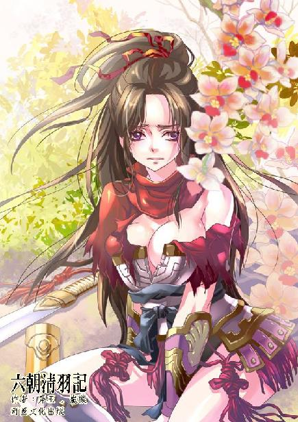
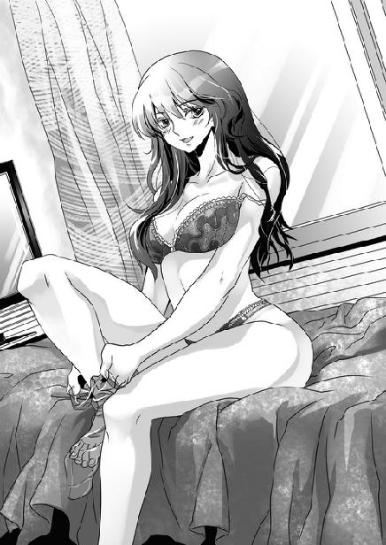
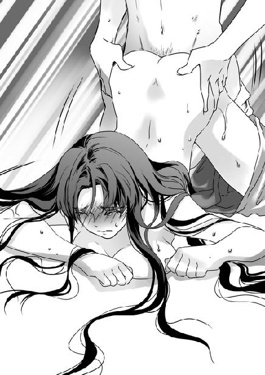

第1集·太乙真宗
序幕篇（1/3）
出版日期：2009-08-21
【本集内容简介】
一个景气差遇上裁员的不得志小子程宗扬，与一天到晚想要穿越时空的好朋友段强，一起坐上了飞往上海的班机。
两人正在机上开着穿越的玩笑，忽然机身微微一抖，像是遇到气流。倏地一道强烈的紫色雷电闪过，正看到段强惊讶的目光，接着那电光像细针一样刺在程宗扬的太阳穴上。于是，两人凭空从飞机上消失了。
当两人清醒后，遇到了荒诞离奇的事，明明是秦朝的军队背景，却正攻打着半兽人。而段强也在这一次半兽人的袭击中死于非命。后来程宗扬也更了解原来，岳飞的口令是：日出东方，唯我不败……
※ ※ ※ ※ ※

封面人物：月霜

插图：叶紫玫

插图：月霜
傍晚。
细蒙蒙的小雨从天而降，在路灯外缘交织成一团湿淋淋的光幕。
程宗扬默默在街道上走着，心情一片阴霾。
一只黑猫出现在街角。黄褐色的眼珠望着他，然后慢慢走过街道。黑色的尾巴微微一甩，显示出雨水的痕迹。
怀里抱的纸箱掉在地上，里头的纸片像蝴蝶一样飞出，随即被雨水打湿，零乱地贴在路面上。
程宗扬本能地伸出手，想捡起这些曾经凝聚了他心血的文件。
他愣了一下。然后把手插进口袋，默默走开。
还有什么用呢？自己已经失去了这一切。
一个老人出现在他身边，浑浊的眼睛望着虚空，慢吞吞说：你的世界黯淡无光。
脚下的街道突然消失，程宗扬仿佛从悬崖跌落，向着没有尽头的深渊直堕下去，耳边回响着那句谶语般的低语。
你的世界黯淡无光。
你的世界黯淡无光……
程宗扬伸出手，像一个无助的溺水者，试图抓紧一根不存在的稻草。然而只有手中空虚。
……
“宗扬……”
一个声音在唤他。
“宗扬……”
那声音优美而纯净，像溪间的泉水，却带着几分惶急。
“宗扬！”
程宗扬惊醒过来，背上又湿又冷，满是冷汗。他怔了一会儿，才认出眼前这个狭小的房间。
路灯昏暗的光影透过窗帘，落在那双白皙的手臂上。程宗扬扭过脸，勉强露出一个笑容。
叶紫玫拥住他，心有余悸地说：“你一直在发抖，出了好多汗。吓死我了……宗扬，你又做梦了？”
程宗扬没有作声，只是拥紧了自己的女友。
同样的梦境从他接到那份通知时就开始了。
三年前，程宗扬从英文系毕业，进入这家策划公司。在工作中，他几乎投了自己所有的精力，凭着这样的努力付出，程宗扬很快成为公司骨干。但他无论如何也没有想到，在他即将踏上成功之路时，却接到了一份裁员通知。
“我们很欣赏你的能力，但是很可惜，公司目前遇到了困境，不得不……”主管不无惋惜地对他说。
程宗扬很清楚他想说什么。优秀并不是被裁的借口，问题是他不该表现得太优秀，以至于在金融风暴来临前，获得了一份符合他能力的高薪。
这是一个可笑的悖论，自己努力工作，希望显示自己的价值，结果刚刚拿到一份还过得去的薪水，就成为公司第一批裁员的目标。相反，如果懒惰一点，拿一份比现在低一半的薪水，却可能安全无事。
“谢谢。”
程宗扬平静地接受了通知，整理好个人物品，领取了一份不少也不多的遣散费，随即离开了公司，成为失业大军中的一员。
但在程宗扬内心，远没有他表现的那样平静。作为一个刚刚工作三年的年轻人，程宗扬并没有太多积蓄。在失业前不久，他拿出所有积蓄作为头期款，预订了一套一年后交付的预售房。
直到程宗扬投递出大量简历却毫无回音的时候，他才知道这次失业多么不合时宜。几乎所有的公司都在裁员，几乎所有公司都在裁掉那些刚加入公司不超过五年，还没有来得及积累人脉，却获得高薪的人员。了解到这些状况后，程宗扬的压力陡然增大。
那套预售房每个月的还贷已经是一个巨大的压力，他还要支付目前住房的租金，进行必要的消费。而他的收入为零。更可怕的是，谁都不知道这种局面将持续多久。
“睡不着吗？”
一只柔软的手掌放在他胸口，在那里温柔地按摩着。接着女友白净的脸庞移来，轻轻贴在他胸口，感受着他的心跳。
叶紫玫是他相恋四年的女友，现在在一家航空公司做空中小姐。本来他们计划要在一年内结婚，所以才购置了房子，可现在，一切都要推迟了。
那只手掌慢慢向下移去，在他小腹轻柔地摩挲。程宗扬舒了口气，心里的郁结慢慢化开。他搂住自己的女友，在她唇瓣一吻，然后舔了舔她的唇角。
叶紫玫推了他一把，然后乖乖钻进被子。接着，一张柔软的小嘴含住他的龟头，温柔地舔舐起来。
舔舐唇角的小动作是他们两个之间的秘密，表示他想让紫玫为自己口交。以往程宗扬总要呵哄半天，叶紫玫才肯亲吻他的阳具。但自从他失业后，叶紫玫就从来没有拒绝过。
一股酥爽的快感从下体升起，程宗扬两手枕在脑后，感受着女友温暖而柔润的口腔。像每一个刚工作不久的年轻人一样，程宗扬非常自负。而这次失业对他的打击也比想象中要大了许多。突然之间失去工作，不仅打乱了程宗扬的生活节奏，更使得他心里充满了挫败感。
生活突然间变得面目全非，为获得一份工作，他每天投递出无数份求职信，而回答他的，只有冰冷的拒绝。在这样黯淡的日子，唯一能带给他安慰的，只有身边的美丽女友。
心里郁结的压力渐渐散开。程宗扬打开床头的台灯，房间里亮了起来。他心爱的女友正乖乖伏在他腿间，细致地吞吐着他的阳具。灯光下，她洁白的身体散发着柔和的肤光，像白玉一样莹润。
在大学时候，叶紫玫就是有名的校花，不仅长相甜美、气质出众，而且拥有令人羡慕的身材。相比之下，程宗扬就平凡了许多，家世也远远不及叶家。然而两个人却走到了一起，彼此相爱。
程宗扬抱起女友，从后面进入她体内。叶紫玫侧过脸，丝一般的长发垂在颈侧，微微挺起腰，温柔地容纳下他的阳具。
程宗扬紧紧搂着叶紫玫，仿佛一松手，她就会消失不见。这一刻，女友柔软的身体带给他无比安慰。程宗扬把所有的压抑和不快都抛在脑后，疯狂地与女友做着爱，直到把自己多余的精力全部发泄出去。
“累了吗？”两个人拥在一起，叶紫玫轻声问。
程宗扬露出一个笑容，轻轻碰了碰她的鼻尖，“和你在一起怎么会累呢？”
叶紫玫白了他一眼，然后说：“那个面试……”
程宗扬手指僵了一下。
失去工作这一个月，程宗扬投递出无数求职信，却没有得到任何回音。叶紫玫却通过父亲的关系，在上海谋得一个面试机会。
如果是以前，程宗扬根本不会理睬这样的面试。他很清楚，那个职位并不适合自己。一成不变的朝九晚五，忙碌而无聊的工作，一天接一天地熬资历，等待晋升的机会，自己想要的东西并非如此，但现在已经没有选择。
“我会去的。”程宗扬说。
叶紫玫看了下时间，匆忙起身，在浴室里洗过身体，然后包着浴巾出来。看到她傲人的身材，程宗扬忍不住抱住她，在她丰挺的乳峰轻轻咬了一口。
“别闹了，我要赶早班的飞机。”
叶紫玫换上内衣，套上透明的连裤丝袜，穿上天蓝色的空姐制服，结好领巾，然后俯下身，在他耳边说：“我今天飞上海，会在那边休息两天。”
叶紫玫眼睛湿淋淋的，散发出迷人的羞色，小声说：“上次买的那套内衣，我还没有穿过，到时候你带来，我穿上和你搞。”
程宗扬心里一热。
叶紫玫在他唇上一吻，“我走了，你再睡一会儿。”
随着她的离开，房间重新陷入黑暗。
程宗扬并不担心工作。叶紫玫的父亲叶行南，是一家制药公司的老总，人面极广，有他出面，获得这份工作并不困难。只是得到这份工作，就意味着他将成为一个小职员，慢慢地熬资历，像蚁巢中的工蚁一样，依照既定的轨道一成不变地走下去。
这样子做……真的可以吗？自己实在觉得很迷惘。
未出社会前，自己也曾雄心万丈，预备先存几年钱后，辞职自行创业，十几二十年后，说不定就能建立自己的企业王国。那时候的豪情壮志，这么快就要在现实之前低头了吗？自己还曾在酒后发过豪语，哪怕不择手段，也要出人头地，成就事业，如今……不择手段的决心，甚至连月底房贷的压力都承受不起……
程宗扬苦笑起来，觉得“年少轻狂”这四个字，真是很讽刺，尽管……自己横看竖看都还不算老。
一阵手机铃声突然响起。
“宗扬！我们约好打球的，你小子不会忘了吧？小心我穿越了，你再想找我打球，就找不到了！”
是段强，程宗扬从小的死党，一个富家公子哥儿，重度的小说动漫迷，对穿越类作品极度狂热。
从程宗扬认识他开始，段强就每天梦想着要穿越到另一个时空，开始一段完全不同的人生。
还是九岁的时候，段强告诉他，“你知道吗？每年全世界至少有四万人没有任何原因地失踪。就好比两个人正在说话，突然之间其中一个就凭空消失了，再也找不到一点痕迹。你知道他们去哪里了吗？”
程宗扬摇了摇头。
“他们是穿越了！到了另外一个时空！”段强得意地说：“我在书上看到过，在我们这个世界之外，还有许多平行世界，当其中一个世界与我们这个世界发生联系时，就会产生穿越现象。”
“是吗？”
“你听说过没有？有个人在路上走着，突然被一道紫色的闪电劈中，等他醒过来的时候，发现自己竟然回到了古代！”
从那以后，每到下雨的时候，段强都坚持不打伞。
“还有一个人，乘电梯的时候，一打开电梯门，发现自己来到另外一个世界。然后他遇到一个老人，才知道自己到了魔法世界。”
那天段强坐了一整天电梯，坚持在每一层都要打开看看，看是不是穿越到了另外一个世界。害得那家公司所有人都陪着他一层一层上下。假如他父亲不是公司的董事，保安早就把这个捣乱的孩子请出去了。
幸好段强只玩了一天，因为他第二天发现，学校也有一个穿越点。
“你发现没有？隔壁班的小胖不见了！”段强神秘兮兮地告诉他，“我最后一次见到他，他正在爬学校的窗户。然后他就再也没有出现过！他肯定是穿越了！”
于是段强每天都要爬那个窗户。作为他的死党，程宗扬也只好每天陪着他爬。直到他们听说小胖原来是转校才放弃。
挂断电话，程宗扬忽然发现，自己挺怀念这个老友的。也好，就打场球散散心吧。
※ ※ ※ ※ ※
赶到篮球馆，段强已经开始热身了。
“宗扬，看我的三分！”
段强跳起来一投，竟然是一个漂亮的空心入网。
“怎么样！”
“再投一个，如果还能中，我就请你吃饭！”
“投就投！”
段强拿起球，又是一记三分。结果力量不足，球还没碰到篮筐就掉了下去。
两个人都笑了起来。
“还是蒙的啊。”
“你蒙个让我看看。”
程宗扬换了球鞋，跳起来活动了一下手脚。然后拿起球，在三分线外一记远投，球碰在篮筐上，高高弹起。
“找到工作没有？”
段强和他无话不谈，知道他现在失业。
“没有。到处都在裁员。”
“失业有什么大不了的。”段强不在乎地说：“我到现在也没有工作，不也过得好好的。”
程宗扬一个三步上篮，投中两分，然后说：“大老板的少爷，你何时需要工作？等你有吃饭压力的时候再跟我说吧。”
段强耸了耸肩。他老爸的企业迟早要交给他，但看老爸的样子，至少还能干二十年，段强也就安心做个二世祖，对工作毫无兴趣。
“我新交了个女朋友，晚上一起吃饭吧。”
“不行。我下午的飞机。”
“飞机？去哪儿？”
“上海。有一个面试机会，我要去一趟。”
“不是吧？”段强怪叫了起来，“你走了我怎么办呢？”
程宗扬啼笑皆非。段强是他最要好的朋友，如果面试顺利的话，以后两人见面的机会就少了。
“什么工作要跑那么远？”段强不满地说。
“大概是文字翻译的校对吧。”
“这种工作你也干啊？一点意思都没有，你大学时候念的书呢？都用不上吗？”
“我大学念的是英文，这已经算不上什么专业，毕业论文交的是古战史研究，那是个人兴趣，也用不在职场上啊！”
其实，程宗扬心里早有动摇，难道真要一辈子当个小职员吗？职位大小不是那么重要，但……这么早就确定平平凡凡过一辈子？把曾经有过的创业梦想与野心都放弃，向现实屈服，自己真的甘心吗？
段强泄忿似的把球砸向篮板，然后说：“不打了！休息一会儿。”
段强把一瓶水递给他，忽然说：“还记得吗？你小时候说，以后要当得分王。还骗我说，到时候封我当篮板王，把我也骗来跟你一起打球。”
程宗扬笑了起来。小时候他最喜欢打篮球，连哄带骗地把段强拉来一起打。但他的身高长到一米七八就没有再长，这个梦想也就破灭了。
那时候他还想过长大了要当科学家，因为老师说，最值得钦佩的是科学家；后来他想当航天员，因为在太空漫步的感觉实在太吸引人了；再往后他还想过要当历史学家、文学家、画家……就像任何一个普通的孩子那样，有过无数的梦想与憧憬。
不过段强的梦想就很纯粹了。他从小的梦想就是要穿越，看看另外一个世界是什么样子的。为此他甚至参加过一期野外生存的训练营，但只待了三天就回来了。他说：“野外生存太无聊了。如果我穿越了，只要带一挺机枪就能攻克一座城市！”
程宗扬笑了起来，“又不是小孩子了，你还在想穿越？”
“那当然！这个世界生活太没意思了。”段强眼睛突然一亮，“宗扬！我跟你一起去上海！”
“你去那儿干什么？”
“那里是北纬三十度线！金字塔、空中花园、百慕大三角……全世界最神秘的事情都发生在那一带。而且我计算过，乘飞机穿越的机率比一般情况下高出一倍！”段强兴奋地说：“说不定我会在扬子江上穿越呢。”
看着好友殷切的眼神，程宗扬哑然失笑，“好吧，我们一起去。到时候我们一起穿越！”
段强拿起篮球，大声说：“看我的穿越之球！”
“噗”的一声，篮球穿网而过。段强举起手，做了个胜利的手势，“穿越成功！”
离开篮球馆，程宗扬才注意到外面停着一辆崭新的保时捷卡雷拉。那是段强新买的跑车，黄色的流线型车身宁静中充满无穷动力，程宗扬不晓得要工作多少年，不吃不喝，才买得起这样的跑车，但对段强而言，这不过是今年换的新车。
程宗扬坐到车上，叹了口气说：“开着这样的车，还整天想穿越。”
“哈哈，理想的生活总是在别处！”段强说：“我恨不得穿越回去当个孤儿，也不用整天闲得无聊。走了！”
“喂，你的机票还没订呢。”
“开玩笑，我的机票还用自己去订！”
三个小时之后，程宗扬与段强已经乘上飞往上海的航班。除了行李，段强还带了一个巨大的旅行袋，里面放着帐篷、睡袋、防虫剂、药品、太阳能充电器、随身工具，甚至还有书籍和潜水衣。
程宗扬觉得很可笑，“怎么带这么多东西？”
“这你就不知道了，这都是穿越时的必备物品。帐篷、睡袋用来野营，防虫剂、药品是防护的，充电器用来给照明设备蓄能。还有这些书，都是讲各种产品的基础制作方法。”
段强随手翻开一页，“水泥：将石灰和粘土按三比一的比例混合，加水至百分之四十，入窑烧干，磨碎即可。简单吧。白痴都能学会。”段强拍了拍旅行袋，“有它在手，穿越到哪儿我都不怕！”
“为什么你还带潜水衣呢？”
段强说：“万一穿越到水里呢？”
程宗扬笑着说：“你可真是个穿越迷。”
段强一边把旅行袋塞进头顶的行李舱，一边说：“难道你就不想穿越吗？”
程宗扬想了一会儿，“不。我不想穿越。”
如果穿越了，谁来偿还房屋贷款呢？
段强坐下来，唉声叹气地说：“难道你连一点梦想都没有，一辈子做个小职员就满足了吗？”
满足吗？那种一成不变，平凡到乏味的生活……
程宗扬下意识地握紧拳头，然后岔开话题，“带这么多东西，你不嫌累啊。来，玩个机智问答，如果给你一次穿越的机会，只限你带三样东西，你会带什么？”
段强精神一振，“简单的我就带三样东西：一本《军工制造》，从炼钢到弹药我全都要造；一份历史年表，有了它，我就是半个神仙；再加一挺重机枪——有这三件宝贝在身，我是神挡杀神、佛挡灭佛！”
程宗扬笑了起来，“你以为带一本《军工制造》就能造出钢铁、弹药？没有工业基础，你连一颗子弹都造不出来。机枪更没用，子弹打完还不如烧火棍呢。再说历史年表——你如果穿越能改变历史，历史年表还有个屁用。如果不能改变历史，你还穿越干嘛？再说，万一穿越到与我们历史无关的异世界，你带历史课本去那边教神话吗？”
段强抓了抓脑袋，“那你穿越到过去要带什么？只限三件。”
程宗扬想了想，“第一件，我要带一套大百科全书，因为财富可能贬值，而知识不会；然后我要带一把瑞士军刀，功能越多越好；第三件，我会带一袋玻璃珠。”
“玻璃珠？”
“如果穿越到古代，没有比玻璃珠更方便更容易换钱的了。说不定拿一颗玻璃珠，我就能换一座庄园。”
“哈哈，如果你穿越到西方，玻璃珠就不值钱，还不如带一根金条。”
“那干脆让你穿越到恐龙时代，拿金条也没用。”
两人在开着玩笑，忽然机身微微一抖，像是遇到气流。接着扩音器里传来机长的声音：“前方有雷暴区域正在形成。各位乘客请系好安全带，不要离开自己的座位。”
透过机窗，能看到外面黑色的云层正疯狂地涌动着，云中不时闪过耀眼的电光。飞机受到乱流影响，所有灯光忽然熄灭，陷入一片黑暗，旅客们失声惊叫，空中小姐忙着安抚，场面一片混乱。
段强把脸贴在窗上，望着翻滚的云层，小声说：“使命创造命运啊……”他扭过头，“宗扬！你知道吗？也有日本学生在飞机上搞穿越的，那是一道雷电打中飞机，然后那个学生就穿越去三国了！”
程宗扬没好气地说：“雷电打中飞机，唯一会发生的事情就是坠机。去死国有路，三国你就别想了。”
正说着，一道强烈的紫色雷电闪过，仿佛一条飞旋的紫蛇透过机窗，朝程宗扬黑色的眼眸射来，程宗扬急忙扭头，正看到段强惊讶的目光，接着那道电光像细针一样刺在他右侧的太阳穴上，发出“嘶”的一声轻响。
飞机终于避开那片雷雨云，安全驶入既定航道，电力恢复，所有灯光重新亮了起来，所有的乘客都松了口气。
“咦？这边的两个年轻人呢？”
有人忽然发现，靠窗的两个座位空荡荡的，上面那两个年轻人就像凭空消失一般，没有留下任何痕迹。
※ ※ ※ ※ ※
眼前出现一个紫色的漩涡，它像一个飞速扩张的黑洞，旋转着吞噬一切。身体和意识一同被漩涡吸入，在这个漩涡里，空间和时间都为之扭曲。程宗扬竭力挣扎，却无法摆脱，他意识一点一点模糊，直到失去知觉。
……
当程宗扬睁开眼睛，发现自己正躺在一片茂密的草地上，温暖的阳光洒在身上，空气中浮荡着淡淡的青草气息。
他抬起头，脑中一阵眩晕，右侧的太阳穴传来烧炙般的痛楚。程宗扬难受地捧住头，脑海一片混乱。难道自己不是正坐在飞往上海的航班上吗？为什么会有阳光和草地？
程宗扬再次睁开眼睛。正午的阳光毫不吝啬地倾泻下来，晒在皮肤上隐隐作痛。眼前是一片望不到边际的草原，平缓的丘陵微微起伏着，仿佛大地上青绿色的波涛。四周一片寂静，没有虫鸣，也没有鸟翅掠过天际的声音。
程宗扬迟疑地抬起手，指上有淡青色的草汁。他仿佛从一个梦幻中醒来，睁开眼睛的那一刻，整架飞机，连同机上所有的乘客全都消失了，没有留下一点痕迹。
沉寂中，一声凄厉的号角划破天地。程宗扬猛然抬起头，朝着声音传来的方向望去，接着他眼神一下变得僵直，露出难以置信的神情。
在他面前，有一片长约两里的月牙状平原。平原右侧，丘陵下列着一个步兵方阵。他们大都没有头盔，头发挽成椎髻，用布带扎紧，身上穿着黑色的皮甲，方形的甲片上部穿孔，用皮革连缀起来。
最前面一排军士手中握着三米长的戈，戈首平出，呈微微上扬的弧形，用来勾啄敌人。后面一排军士用的是铍，顶部如同短剑，长度超过三米五。而使用最多的则是矛，他们手中的长矛高度达到七米，金属制成的矛尖在阳光下闪动着凛冽的寒光。远远望去，仿佛一片长矛组成的森林。
方阵之前，是三排手握弩机的弩手。他们穿着黑色的布衣，以半跪的姿势蹲在地上，昂首望向前方。这些弩手完全是轻兵装束，身上除了盛放弩矢的箭匣，再没有任何装备。
在方阵之后，有一位戴着板状皮冠的指挥官，他唇上留着两撇八字胡须，腰间佩着一柄长剑，一手按在剑柄上，目视前方。方阵中的军士面无表情，仿佛一群沉默的雕像。寂静中，透出肃杀和死亡的气息。
程宗扬所处的位置是一道形如鱼背的山丘，从这里能够俯视整个战场。他把视线移动到平原另一侧，心脏不由猛然跳了一下。如果说，目睹了刚才的步兵方阵是令他震惊的话，那么此时他感到的则是恐惧。
与步兵方阵对峙的，是一群高大的半兽人。程宗扬可以断定，自己决没有见过这个种族。那些半兽人有着令人望而生畏的强悍体魄，最矮小的也超过两米，数以百计的巨人聚在一起，犹如一道巍峨的山峰。
他们穿着粗糙的兽皮甲胄，脖颈粗大，肩背像岩石一样又厚又宽，赤裸的手臂上，虬结的肌肉高高隆起，皮肤犹如青铜。尤为令人生惧的是他们的面容，几乎所有的武士都生有粗长的獠牙，下齿比上齿长出一倍，交相咬紧，宛若雪亮的弯刀。他们眼睛像滴血一样鲜红，鼻翼微微抽动，狰狞的面孔完全不似人类，更像是一群直立行走的野兽。
程宗扬只觉得喉咙发干。和生活在都市中的大多数现代人一样，他的视力并不好，但现在，他的目光却能够越过整个战场，将所有的细节看得清清楚楚。阳光下，甲胄鲜明的步卒方阵，野兽般凶悍的半兽人，都显得如此真切，仿佛一伸手就可以触摸到。
背后传来一阵响声，程宗扬心脏猛然收紧。他恐惧地回过头，看到的却是段强。
段强一边爬一边四处张望，“我们坠机了吗？这是什么鬼地方？宗扬，前面还有人吗？”
程宗扬很想说有，而且有很多。但他说不出话来，只用手指了指。
段强手脚并用趴上山丘。下一瞬间，他的嘴巴猛然张开，就那样僵住了。
“这是什么？”段强愣愣问道。
程宗扬咽了口唾沫，从牙缝里挤出两个字：“秦军！”
服色尚黑，披甲持矛，只有当年横扫六合的大秦军团才有如此气势。自己在大学时候，因为要找毕业论文的题材，对中西各国古战史进行过研究，连带对各种古军械、战法了解很深，像这样明显的特色，一眼就能看出来。而段强当时选的题材是徽章学，不过最后他是花钱买枪手交论文过关的。
“秦军？为什么会有秦军？”段强说着慢慢张大嘴巴，“我们……我们穿越了？”
程宗扬和段强面面相觑，然后同时往身上看去。两人还穿戴着乘机时的衣服、钥匙、手机、钱包……所有的物品都没少，连程宗扬随身带的一只轻便运动背包都在。可眼前的一切……
段强脸上露出梦幻般的表情，无法确定地又问了一句：“我们穿越了？”
程宗扬不知道自己该露出什么表情。穿越？这么荒唐的事情竟然发生在他身上？他想起航班上那个诡异的雷电，不由地打了寒噤。他只是个平凡的小人物，这次飞上海只为找一份工作，从来都没想过要穿越。
段强的表情慢慢变得狂喜，他双手握紧拳头，兴奋地喊道：“我们穿越了！我们穿越到秦朝了！”
程宗扬望着面前的战场，嘴角抽动了一下，“我不知道……”
这支军队的装备确实是典型的秦军，可是他们的对手不是六国，也不是匈奴，甚至不是人类，而是两米多高的直立野兽，在小说电影中有个固定的称呼：半兽人！
半兽人中有一个分外高大的武士，他手中握着一柄青铜重斧，粗壮的手臂比正常人腰身还粗，虬屈的长发从脑后披散下来，颈下戴着一只野兽的下颌骨，比钢铁还硬的额头高高隆起，凶狞的面孔如同一头嗜血的雄狮。
那名高大的武士昂起头，发出一声充满仇恨的咆哮，然后举起巨大的青铜重斧，往前一挥。在他周围，数以百计的半兽人立刻咆哮而出，犹如一群发怒的野兽，冲向平原。
他们没有骑马，因为没有任何马匹能够支撑他们的体重，而他们奔驰的速度甚至比战马更快。那些半兽人的武器并不精致，但当他们挥舞起那些车轮大小的巨斧，比人头还粗、钉满尖刺的巨棰时，强悍的武力仿佛能撕裂大地。
秦军方阵以四十人为一排，前后十二排，共有四百八十人。弩手三排，共有一百二十人，合计军力六百人。而那些半兽人的数量不下五百，以他们远远超过人类的强悍体魄，实力至少在秦军两倍以上。
面对奔涌而至的半兽人，秦军士卒毫无惧意，冷漠得如同岩石。
戴着板状皮冠的指挥官昂首而立，他身上的甲片比方阵中的士卒更为精致，细密的方形甲片从肩部一直延伸到手背，手指稳稳握住剑柄。等半兽人冲入月牙状的平原，他缓缓拔出长剑，高举过顶，喝道：“弦！”
阵前的弩手冷静地踏住弩背，用腿部的力量撑开机括，熟练地装上弩矢。
指挥官长剑慢慢下移，呈四十五度斜指前方，喝道：“望！”
弩手扬起头，同时抬起弩机，用弩上精巧的望山瞄向对面的半兽人。
半兽人庞大的身体在草原上奔腾，沉重的脚步声宛如惊雷，每一步落下都践起青草和草下大团大团的黄沙，毫不畏惧地迎向秦军的弩矢。
指挥官冷冷望着敌军，然后果断地劈下长剑，厉声喝道：“灭！”
“嘭”的一声，矢头制成三棱形的箭矢脱弦而出，向上划出一道弧线，然后雨点般洒向敌军。冲在最前面的几名半兽人身上顿时溅起血花。
程宗扬和段强都流露出无法相信的神情。在他们想象中，冷兵器时代的弓弩能有一百米的杀伤距离就不错了，而眼前秦军使用的弩机力道出奇的强劲，有效射程竟然超过三百米。
那些半兽人勇悍之极，以往战斗中，秦军劲弩在三百米内只要命中一矢，就足以令敌军丧失战斗力。而这些半兽人的强壮却堪比野兽，他们速度疾若奔马，秦军弩手刚齐射两轮，半兽人已经逼近到一百米的距离。
最前面一名武士颈下戴着一只猛虎的下颌骨，手臂上粗长的血管像蚯蚓一样在皮肤上绷紧，粗壮的肌肉犹如铁石。他手中的巨斧犹如车轮，直径将近一米，双面开刃，完全以青铜铸成，沉重无比。他身上已经中了五六支弩矢，每跨出一步，鲜血就飞溅而出，却仍狂奔不已。
“弦！”
“望！”
“灭！”
指挥官冷静地发出指令。最后一轮箭雨再次袭来，至少有十张弩机都瞄准了这名猛虎武士。黑色的箭矢狠狠撕开他的皮甲，射入他的胸膛。那名武士颓然倒地，他发出一声狂吼，然后用尽全身力气挥出巨斧。
弩手们放完三轮箭雨，开始收起弩机，从方阵两侧退往后方。巨斧带着刺耳风声呼啸而至，将两名弩手拦腰截断，狠狠斫入草地。鲜血猛然喷出，溅在后面一名士卒脚上。
那名手持长戈的士卒一动不动，脸上没有丝毫表情。当指挥官发出口令，他踏前一步，举起手中的长戈。在他身后，第二排士卒放下形如短剑的铍，然后是一支毒龙般的七米巨矛。所有的武器平举向前，原本密如森林的方阵就如同一部配合精密的战争机器，刹那间露出嗜血的锋芒。
弩手已经全部退到方阵之后，四百八十名步卒组成的方阵以相同的速率迈步向前，就像一只浑身生满利刺的怪兽，缓缓逼近战场。
身上还带着箭伤的半兽人狂吼着奋力挥舞斧棰，正面撞上秦军的战阵，就像巨浪冲向礁石。但在他们面前，是一座由不同武器组成的恐怖森林。
三米长的戈，三米五的铍，七米的重型长矛交错排列，不留丝毫缝隙。随着指挥官的号令，秦军士卒戈矛同时攻出，那些半兽人根本无法碰触到对手，就被狠狠撕碎。
如果论单体战斗力，半兽人远远超过了秦军，即使五名秦军也未必能及得上一名半兽人的力量。但在战场上，秦军依靠精良的装备、准确的战术和严密的纪律，完全占据了上风。
四百八十名士卒组成的战阵宛如一人，经过无数次的训练和血腥搏杀，秦军士卒的配合默契之极。每次攻击，最前面的士卒先用弯曲的戈勾架住对手的武器，然后第二排的铍左右劈削，最后是密集而沉重的长矛。
搏杀中，一名半兽人用巨斧劈断两支长戈，咆哮着闯进战阵，一斧将紧邻的两名士卒从肩到腿劈成四段。旁边的秦军没有一人回顾，但后方超过五支重矛同时递出，从不同角度穿透了那名半兽人的躯体。后排的士卒随即补上空缺，继续前进。
随着指挥官的号令，方阵中各种武器潮水般击出，每一击都有数名半兽人溅血倒下。那些步卒始终不动声色，如同沉默的杀戮机器，缓慢而毫不留情地踏过敌军的尸体。
如果是同一种族的人类战士，面对秦军堪称残酷的攻势，也许早已崩溃。但这些半兽人却没有一人退却，他们用自己强悍的身体抵住秦军的攻击，然后用手中的巨斧、木棰、拳头，甚至是獠牙去攻击撕咬敌人。
鲜血在草地上流淌，将青色的草原染得鲜红。一个又一个高大的躯体在森林般的长矛方阵前倒下。同样，秦军的士卒也不断被巨斧和木棰击中，血染黄沙。
程宗扬脸色苍白得毫无血色。当第一个半兽人溅血倒下，他右侧的太阳穴就像针扎般突然一痛。随着战死的士卒越来越多，那痛苦就越来越剧烈，仿佛有人用铁凿不断凿击他的头颅。
旁边的段强也不比程宗扬好多少，眼前的杀戮几乎使他忘掉了穿越的惊喜，和程宗扬一样，他的脸色也是一片苍白。
两人对视一眼，看出彼此的惊疑和恐惧。段强用发干的声音说：“这些是真的吗？”
程宗扬喉头滚动了一下，没有作声。
段强用力掐了自己一把，然后抽着凉气说：“不是做梦。”
程宗扬唇角抽动了一下，想笑却笑不出来。这家伙整天都想着穿越，现在真的穿越了，却不敢相信。
段强突然跳起来，在草地上疯狂地寻找，“我的包呢？我的包呢？”
看到他急切的样子，程宗扬生出一阵荒唐感。这个穿越迷一直都梦想着这一天，连乘飞机都带着穿越用的物品，结果真到穿越的时候，那只旅行袋却放在了飞机的行李舱里，除了随身放着的几件小东西，什么都没有带来。
程宗扬没有段强那种梦想成真的狂喜。他从来没想过自己会穿越，在目睹了面前血腥的搏杀之后，他只想回到那个熟悉的世界。
在这片草原上，他看到无数人在战场上拼杀。狰狞的半兽人在屠杀人类，人类同样也在屠杀半兽人，鲜血和残缺的肢体不住飞起，到处是鲜血和死亡。更可怕的是，他居然一点都没有感到惊惧，相反，额角的疼痛却让他在不适中生出一种隐隐的兴奋……
段强忽然停下来，看着程宗扬的脸，“宗扬，你……”
程宗扬抬起头，“怎么了？”
段强指了指他的脑袋，有些迟疑地说：“这里有个伤口……好像在闪光。”
程宗扬右侧太阳穴上有一个紫色的伤痕，形状如同闪电。此时正随着山丘下不住传来的濒死呼喊声，在他皮肤上隐隐闪亮，流动着诡异的光泽。
程宗扬朝自己的太阳穴摸去，忽然内脏仿佛被人抓住用力一拧，忍不住呕吐起来。
“宗扬！”段强连忙扶住他。
程宗扬不停呕吐着，却没有吐出任何东西。这次呕吐与他以往的经验完全不同，那些充满死尸气息的空气不住涌入他的口鼻，即使他屏住呼吸，仍不断透过皮肤进入体内，带来冰冷的寒意。
伴随屠杀而来的兴奋感越来越强烈，他一边呕吐，一边呼吸着充满死亡气息的空气，几乎按捺不住身体的冲动。
就在程宗扬几乎崩溃的时候，肚脐下方的位置微微一动，充塞在体内的气息仿佛找到了一个泄口，像潮水一样流入其中。程宗扬松了口气，脸色恢复正常。
“没事了。”程宗扬推开段强的手臂，手指微微战栗。
战场中，胜利的天平正在向秦军一方倾斜，半兽人的攻势被秦军方阵遏止，越来越多的半兽人倒在血泊之中。就在这时，一队骑兵从秦军背后的山丘后驰出。
马上的骑手穿着轻便的皮甲，手持弩机，腰佩长剑，鞍侧挂着一支一米五长的短矛，从两翼朝兽蛮人围去。秦军的轻骑以其快速机动，总是作为战场的终结者出现，用来拦截袭击撤退的敌军。长平之战秦军以轻骑五千将四十五万赵军断为两截，最终全歼赵军。当秦军的轻骑出现，战斗的胜负已经没有悬念。
战场另一侧，那名分外高大的半兽人手中握着巨斧，浓密的长发在风中飘舞。望着战死的同族，他昂起雄狮般的头颅，发出一声悲凉的嗥叫。
叫声在草原上远远传开。良久，草原深处传来一声同样悲凉的回响。高大的半兽人扯下颈中的野兽颌骨，在青铜斧轮上拍得粉碎。
簇拥在他周围的兽蛮人都露出屈辱和不甘的眼神。兽骨项链是兽蛮武士勇力和荣耀的标志，当他们毁去自己的荣耀，也就意味着承认失败。每一个兽蛮男子都是天生的勇士，宁肯死去也不会服输。当天神创造出天空和大地，他们就是这片草原的主人。但现在，他们不得不又一次放弃自己的土地，耻辱地接受失败。
兽蛮武士开始突围，秦军方阵仍以自己的速率缓慢前进，并没有因为敌军的退却而放弃阵形。骑在马背上的秦军弩手分成小股，四散追逐溃散的敌军，无情地收割着生命。
后方的半兽人冲上来援救自己的同伴，再返身冲破秦军轻骑的拦截。对垒的两军转变为一场追逐与反击的混战，战场迅速扩大。
一支弩矢不知从何处飞来，斜插在离两人不远的草地上，矢首射入沙土，矢尾不住颤抖，上面依稀带着血迹。
两人惊出一身冷汗，不约而同地伏下身体，朝山丘后爬去。
程宗扬咽了口冰凉的口水，“你还想穿越吗？”
段强面如土色，他勉强挤出一个充满恐惧的笑容，“我们不该穿越到这里，如果……如果……”
段强想说，如果穿越到另外一个地方，也许能够实现他的梦想。但没等他说完，程宗扬浑身的汗毛忽然间全都竖了起来，嘶声道：“段强——”
一支巨大的长箭蓦然飞来，狠狠从段强颈侧穿过，带出一蓬猩红的血雨。
程宗扬浑身的血液都仿佛凝固了。箭矢贯穿了段强的颈部，几乎是一瞬间就夺去了他的生命。
右侧的太阳穴传来一阵尖锐的刺痛，程宗扬抱住段强的身体跪在地上，头脑中一片混乱。
‘看我的穿越之球！’
‘穿越成功！’
‘我要带三件东西：一本《军工制造》，从炼钢到弹药我全都要造；一份历史年表，有了它，我就是半个神仙；再加一挺重机枪——有这三件宝贝在身，我是神挡杀神、佛挡灭佛！’
段强的笑声似乎还在耳边回响。
命运如此荒唐，他终于如愿穿越到另外一个世界，却只在这个世界生存了短短几十分钟。在原来的世界，他有金、有车、有女人……却宣称理想的生活在别处，生命中唯一的梦想就是穿越。当他终于梦想成真，等待他的东西却是一支穿透脖颈的利箭。
如果他知道自己的命运是如此结局，还会梦寐以求想要穿越吗？
程宗扬永远也不会知道答案。
※ ※ ※ ※ ※
一支寒光凛冽的箭头正对着自己。那是一张巨大的长弓，弓脊足有手掌那么宽，上面包裹着坚硬的牛皮。握弓的手同样巨大，骨节暴露的手指像裸露的树根一样粗壮，上面长着野兽般的鬃毛。随着关节的用力，弓弦正缓缓拉开。
程宗扬本能地俯下身，身体失去平衡，从低缓的山丘上翻滚下来。蓝色的天空与青色的草地旋转着在他眼前飞速交替，程宗扬惊恐得几乎喘不过气来，最后身下一软，掉到一个浅浅的草窝中。
程宗扬所处的山丘本来远离战场，但随着兽蛮武士的溃败，战场不断扩大，这里也被波及。一群败退的半兽人奔上山丘，一箭射杀了段强，然后又瞄向程宗扬。
就在程宗扬触摸到死亡阴影的一刻，长箭放开他，朝另外一个目标射去。
山丘下，几名骑兵奔驰而来，其中一名大汉反手拔出长剑，重重劈在箭上，然后勒住马匹。在他身旁，五名骑兵扇形散开，各自举起弩机，阻断那些兽蛮武士的退路。
他们脸膛大多被烈日晒得黑红，眼神却像刚淬过火的刀刃般，锋利无比。在这些铁打的汉子中，有一张面孔出奇的白净，看来较其余同伴年轻，手背上覆盖着软甲，手中提着一具弩机，与同伴一样，除了一柄便于马背击刺的长剑，再没有携带任何重武器，但给程宗扬的感觉却与其他人完全不同。那名年轻骑手冷冰冰看了程宗扬一眼，然后抬起头，望向他背后的山丘。
山丘的坡度并不陡，地上又有厚厚的青草，程宗扬一路滚下来，除了脸上擦破一块，并没有受伤。他惊魂未定地喘着气，后背被冷汗打湿。
这一切都发生在瞬息之间，直到现在他还无法相信，自己穿越到了另外一个世界，而与自己一起穿越到这个陌生时空的段强已经死了。他抬起头，心头不由狠狠打了个冷战。
山丘上的兽蛮武士有十余人之多，其中一个身高几乎有程宗扬的两倍，正是那个毁掉自己兽颌项链的半兽人首领。一名武士弯下腰，从段强颈中拔出长箭，然后搭在弓上，血淋淋的箭矢对准山丘下的骑兵。
那名面孔白净的年轻人甩开马镫，用脚踏住弩背，利落地拉开弩弦，然后扬起弩机，毫不犹豫地一箭射出。
“嘣”的一声，锋利的弩矢闪电般飞出，从他粗壮的手臂穿过。
那名半兽人手指一松，长箭从弦上滑出，斜插在地上。他瞪着血红的眼珠，然后抓住弩矢尾部，将箭支硬生生拔了出来，鲜血顺着他的手臂淌下，他却浑然不觉。
对于你死我活的双方来说，这个时候，所有的语言都已经多余。山丘上的半兽人齐声咆哮，像一群野兽猛扑下来。
那名年轻的骑兵拔出佩剑，双腿一夹马腹，正要抢先奔出，却被旁边的大汉一把拉住缰绳。
那大汉胡须也不知道多久没刮，密密麻麻一直连到鬓角，他低吼道：“你有伤在身，不能逞强！退下！”
那年轻人毫不退让地扬起下巴，“凭什么不让我上战场！”
“这是师帅的吩咐！”
那大汉一扯缰绳，将马首拉得偏到一边，然后举起短矛，在马臀上用力一刺。
战马吃痛地嘶鸣一声，扬起前蹄，朝侧方奔去。那名年轻的骑手猝不及防，被马匹带得扬在鞍上。
赶走那名年轻人，虬髯大汉吼道：“兄弟们！拼了！”
剩下的四名骑兵齐声应诺，虽然只有寥寥数人，但声震四野，气势丝毫不逊于那些凶猛的半兽人。
那匹负伤的战马径直朝程宗扬奔来，马背上的年轻骑手扯紧缰绳，一边喝道：“快滚开！”
程宗扬这辈子还没骑过马，看着包了蹄铁的马蹄直踏过来，顿时脸色发绿，顾不得自己身为现代男性的尊严，连滚带爬闪到一边。
谁知道那匹马受了惊，无法控制，铁蹄踉跄着践起零乱的青草，离程宗扬越来越近。程宗扬魂飞魄散，拼了命地躲闪，但那几只铁蹄却像认准了他一样，就在他头颈肩背周围趵踢践踏。
程宗扬索性躺倒，大吼一声：“你踩死我吧！”
蹄铁擦着程宗扬的脸颊重重踏进草地，马背上的骑手站在镫上，双手扯紧了缰绳，嚼铁深深勒入马口，几乎勒出血来。
程宗扬脸上的肌肉不由自主地抽搐着，头发里沾满草叶，不用照镜子，他就知道自己这副样子有够狼狈的。但对于一个两度与死亡擦肩而过的不幸穿越者来说，体面已经不重要了。
那名年轻的骑手竭力控制住马匹，至少预想的蹄铁并没有踢到程宗扬头上。
程宗扬松了口气，这才注意到这名骑手的面容。
他长得……很俏。双眉长长伸出，在洁白的脸颊上，仿佛飞翔的燕翅，眼睛明丽之极，抿紧的嘴唇嫣红动人。很美，很惊艳——如果她是女人，一定是个很美的女人；如果是男人，那么一定是个很不幸的男人。
那名骑手显然对程宗扬没什么好感，他狠狠瞪了程宗扬一眼，跳下马朝同伴奔去。
与方阵中那些沉默的士卒不同，那名骑手奔跑的姿势很奇异，他一手按住剑柄，身体向前倾斜，完全依靠脚尖的力量往前飞掠，整个人就像在草上滑行，不仅姿势优美，而且速度极快，让程宗扬想起传说中的武林高手。
作为一个平常上三楼都要乘电梯的都市人来说，武林高手完全是第六维空间的存在。程宗扬有些庆幸自己刚才没有表现得太嚣张。
另外一边也是一群存在于第六维空间的生物。那些半兽人迈开大步，速度丝毫不逊色于奔马，身材更是高得可怕，站在地上也超过了马背上的骑兵。
五名骑兵结成品字形的阵列，两名在前，三名在后，各自摘下短矛，盯住冲过来的兽蛮武士。正面的秦军方阵已经击溃敌军，正在清理战场。他们在大草原深处追逐了三月之久，就是要彻底清除兽蛮人对帝国西部的威胁。只要他们能阻挡片刻，援军就能赶来，斩下这名兽蛮首领的首级。
冲在最前面的兽蛮武士獠牙张开，发出雷霆般的怒吼，然后腾身而起，在半空中将足有车轮大小的巨斧举过头顶，猛然劈下。
前面两名骑兵同时举起短矛，交叉架住斧柄。“铛”的一声，巨大的冲击力使两人肩膀一沉，身下的坐骑也被震得退了半步。
这五名骑兵配合得熟练之极，短矛刚刚架住斧柄，后面三名骑兵坐骑同时往前冲出半步，借着马力，从两侧将短矛狠狠刺进那名兽蛮武士肋下。
这完全是战术配合的优势。如果单对单，一名兽蛮武士打完这五名骑兵还有剩的，但五名骑兵配合默契，两人防守，三人进攻，一举将那名兽蛮武士刺倒在地。
兽蛮武士腰腹间流出岩浆般腥浓的鲜血。“古格尔！”他嘶吼着扔下巨斧，纵身抱住一名骑兵，将他连人带马撞倒在地，然后张开大嘴，尖长的獠牙像匕首一样撕开骑兵的脖颈，鲜血迸涌而出。
马背上的虬髯大汉面沉如水，他侧身一掷，短矛毒蛇般从那名武士背后狠狠刺入，将他刺死马下，然后从腰间拔出长剑。
这些刀头舔血的汉子已经见惯了死亡，生死关头更不容分心，而兽蛮人显然更倚仗本身的勇悍，各自为战，并没有调整速度一起围攻。
又一名兽蛮武士暴吼着朝那名大汉冲来。虬髯大汉平持长剑，冷冷盯着对手。就在兽蛮武士冲来的同时，他身后两名骑兵突然驰出半步，两支短矛一左一右刺进那名武士的前胸，接着那大汉从马上跃起，双脚稳稳踩住兽蛮武士壮硕的肩膀，双手倒持长剑，从他背后狠狠刺入。那名兽蛮武士颓然倒地，手中的巨棰重重落在地上，溅起一片泥土。
那名叫古格尔的兽蛮首领双目血红，他抓起一支长矛，振臂掷出。那虬髯大汉长剑刺在兽蛮武士背中，被粗大的脊骨卡紧，不等他弃剑闪避，那支长矛已经呼啸而至，应声射入大汉的左胸，从背后穿出。
瞬时间双方各死两人，程宗扬右侧的太阳穴也接连传来四次剧痛，最后一下分外剧烈，痛得他几乎要流下眼泪。与此同时，四股阴寒的气息也随即进入程宗扬体内。
双方都没有理会程宗扬。在那些骑兵看来，程宗扬虽然穿着怪异，但明显是人类种族；而对于兽蛮人来说，这个手无寸铁的陌生人类并不比那些骑兵更有威胁。
跟随在古格尔身边的都是部族中最有名的勇士，他们咆哮上前，将剩余的三名骑兵尽数格杀，而地上的兽蛮人尸体，也多了两具。
古格尔左矛右斧，将一名骑兵连人带马劈成四截，然后挺起雄壮的身体。他浑身浴血，犹如远古而来的兽蛮天神。
如果不是亲眼目睹，程宗扬无论如何也不相信，单靠人类的力量能够与恐怖的半兽人抗衡，并且在劣势下杀伤相当。虽然那些人类骑兵依靠的是相互间的配合，但显示出的强悍也远远超过他的想象。他心里不禁升起一股寒意，这些骑兵真的仅仅是秦军吗？
所有的同伴都已战死，那个年轻的骑手仍毫不犹豫地朝兽蛮人冲去。与半兽人惊人的体魄相比，他的身形显得纤小而又柔弱，但他一往无前的决绝姿态，却像手中的长剑一样锋利。
那些兽蛮人已经被鲜血和杀戮激起凶性，一名兽蛮武士举起铜轮巨斧，朝他腰间劈来。那骑手脚尖一点，身体像滑行一样避开巨斧，接着手中的长剑蓦然亮起，闪电般穿过斧影，刺在兽蛮武士腕上。
亮起白光的长剑锋锐无比，那名兽蛮武士左手齐腕而断，巨斧带着残缺的断手飞出，带出一蓬血雨。他獠牙“咯”地咬紧，接着右手握拳，岩石般的重拳重重砸在剑脊上，将那骑手震得倒退一步。
古格尔抛下已经弯曲的长矛，双手握斧，雷霆般劈在那名骑手剑上。那骑手虽然胆略过人，终究是气力不济，巨斧每次劈下，剑上的白光都弱上一分，身体更被逼得接连后退。最后“铮”的一声脆响，失去白光的长剑被巨斧从中劈断。
那骑手反应极快，反手一掷，半截断剑削在古格尔岩石般的手指上，溅起一缕血光。
巨斧轰然落地，古格尔淌血的大手猛然伸出，劈手抓住年轻骑手的胸甲，然后左手握拳，狠狠打在他腹上。
那骑手穿着骑兵用的轻便皮甲，随着古格尔足以裂石的一拳，他胸前方形的甲片四处纷飞，身子横飞起来，整个人像断线的风筝一样掉在地上，又滑出十余米的距离，正落在程宗扬刚才待过的草窝里。
明知道打不过，还要跑回来送死。程宗扬心里给了他一个评价：疯狂！
那骑手头盔不知掉在什么地方，露出布条扎紧的发髻。他脸色一片雪白，唇角淌出一股鲜血，显然受了不轻的内伤，恐怕连肋骨也断了五六七八根。
再往下看，程宗扬呼吸猛然一窒。
那骑手胸前皮甲被撕出一个大洞，连束胸的白布也被扯开，露出两只圆润的……乳房。虽然不及西片里乳牛级的巨乳硕大，但也有够瞧的，曲线圆润饱满，皮肤又白又嫩，尤其是那两只乳头，还是娇嫩的粉红色。只不过左乳乳侧被半兽人粗大的手指抓出一道伤痕，鲜血淋漓……
程宗扬不由自主又朝她脸上看去，原来真是个美女。秀美的双眉直入鬓角，眉宇间英气逼人，只是目光显得不是很友好……
女骑手用几乎喷火的目光狠狠瞪了程宗扬一眼。一个男人如此不顾忌地盯着她的裸胸看，她会有什么样的反应，不问可知。刚要开口斥骂，内伤恰于此时发作，一口鲜血险些喷出，她用白净的手掌勉强掩住胸口，苍白的面孔上升起一层病态的红晕。
很漂亮。程宗扬在心里重复了一遍。虽然经过一场生死搏斗，衣甲破碎，头发散乱，模样狼狈，而且完全是素面，但容貌比起他所在的世界里那些光彩照人的明星，也毫不逊色。
程宗扬正看得出神，忽然心生警兆，他猛然回过身，整个人差点傻掉。
杀红眼的兽蛮武士们像一群直立的野兽，缓缓朝他走来，丑陋的面孔狰狞可怖。在他们骇人的体魄面前，程宗扬觉得自己就像一个光屁股婴儿一样可怜。
其实这完全是一个误会，谁能想到那个女扮男装的骑兵会被打得步步后退，最后更是一下飞出十几米，好死不死地掉到自己背后？
这会儿，自己一个人站在一群半兽人面前，虽然心头狂跳，满脸惧色，但那些半兽人大概也分辨不出来，只会看见自己激动地双手握拳，目露精光，像极了一名奋勇救美的英雄。
最前面那名武士有一只雄狮般的头颅，獠牙上还带着未干的血迹。程宗扬对着这些半兽武士，后悔得想要自杀，如果可能，自己肯定有多远就跑多远。
可这些半兽人大步一迈，就够自己跑一阵的。至于求饶，程宗扬很怀疑这些半兽人是否能听懂人类的语言，况且他们一定不会给自己解释的机会。
程宗扬怔了百分之一秒，然后在更短的时间内摸遍全身每个口袋，像快要溺死的人拼命寻找浮木。
手机，如果是手榴弹多好？
钥匙，如果是《迷之屋》那个电玩里，那把可以打开任何一道门的神奇钥匙就好了。
钱包，他们收买路钱吗？
兽蛮武士浓重的呼吸几乎喷到程宗扬脸上。此时他们与秦军只隔了一座不高的山丘，在战场边缘游弋的秦军轻骑随时都可能出现。但对于程宗扬来说，他们都有点太远了。
古格尔拳头扬起，带起巨大的风声呼啸而至。那感觉就像一列时速超过二百公里的列车迎面开来，程宗扬还没有碰到拳头，就被拳风吹起，身不由己地往后飞去。
“砰”的一声，程宗扬仰面摔倒。正好落在……
“呃——”那个女骑手露出痛楚的表情。
程宗扬摔得七昏八素，还咬破了嘴巴，一嘴的鲜血，没有留意自己正落在那个女骑手身上，压到了她断裂的肋骨。那兽蛮武士的拳风，几乎把他内脏都打得翻滚过来，胸口骨痛欲裂。
惊魂未定，程宗扬本能地双手握紧，抓住身下的东西。右手抓到几块脱落的甲片，左手运气不错，抓到一团温暖柔软，而且富有弹性的物体，感觉又滑又嫩，像是……
程宗扬疑惑地揉了揉，又捏了两把。
“啪！”
女骑手竭力抬起手臂，狠狠给了他一个耳光。
程宗扬这才意识到自己抓到的正是她受伤的左乳，他连忙放手。
“我不是故意的！”
“无耻！”
两个声音同时响起。
接着又是“啪”的一记脆响。
程宗扬捂着脸，心道：算了算了，这种事跟女人解释不清，还是赶快起来是正事。他抬起身，准备爬起来，手肘又撞到女骑手的肋下，这下连他都感觉到断骨摩擦的“咯咯”声，更不用说那女骑手花容失色，痛得连骂都骂不出来。
程宗扬手忙脚乱地爬起来，忽然摸到身后一个方形的物体。
背包！他身上还有一个运动型的小背包！
程宗扬顾不得小美女杀人般的目光，一把将背包拽到身前，拉开拉链，紧紧抓住里面的物品。瞬间，出发前在飞机上的那段交谈，在脑海中回响起来：
‘你穿越到过去要带什么？只限三件。’
‘第一件，我要带一套大百科全书，因为财富可能贬值，而知识不会；然后我要带一把瑞士军刀，功能越多越好；第三件，我会带一袋玻璃珠。’
大百科全书、瑞士军刀、玻璃珠，这是自己对于最佳穿越工具的答案，到现在也没有改变。小说与漫画中的那些主角，穿越时候所带的工具，想必远比自己还要夸张许多。而自己这个平凡人，在被半兽人团团包围的命悬一刻，身上又有些什么呢？
背包里不多不少，装着三件物品：神奇橡胶制品——一打超薄型安全套；高级合成化学纤维——两套情趣内衣；现代电子科技与人体科学的完美结晶——一根电动按摩棒。
‘我今天飞上海，会在那边休息两天。’女友眼睛湿淋淋的，散发出迷人的羞色，‘那套内衣我还没有穿过，到时候你带来，我穿上和你搞……’
命运就是这样荒唐，想穿越的没能留下，没想过穿越的却被留在这个陌生的时空。想要的机枪、军刀一件没有，有的却是情趣内衣、安全套、按摩棒。
在他眼前，半兽人巨大的手掌朝他脖颈抓来，粗糙的皮肤上尖利的鬃毛又黑又硬。十几个半兽人把前路完全封死，来势汹汹，自己绝对没有突围的可能。
程宗扬看了那个要喷火的女骑手一眼，慢慢拉上背包，然后吸了口气，认命地挺起胸膛，脑里又回响起那个最近常常听到的自我质问。
就这么当一个平凡的上班族，自己真的愿意吗？放弃创业致富的梦想，舍弃壮志雄心，庸庸碌碌，终此一生，这样子选择真的甘心吗？
这个问题之前想过多次，却始终没有一个很肯定的答案，自己反复迟疑着，不停地想着，就是答不出来。
然而，那个答案……此刻却是再也清楚不过了。
……如果老天让我再选一次，我一定当一个老老实实的上班族！
※ ※ ※ ※ ※
望着半兽人足以粉碎岩石的巨手，程宗扬已经避无可避。一股惧意从心底升起，瞬间袭遍全身。难道我就要死在这里了吗？
忽然，一只白美的手掌从他身侧伸出，仿佛捻着一朵含露的玉兰，轻柔地迎向半兽人巨大的手掌。
就在双掌接触的刹那，那只白美的手掌拇指与中指轻扣，尾指微微翘起，掌心的空气传来一阵波动。隐约间，一只太极的图案脱掌而出，接着微微一红，瞬间就化为一团烈火。
半兽人嚎叫着向后跌倒，庞大的身体一瞬间就被烈火吞噬，成为一只巨大的火球。
法术！程宗扬心里蹦出这个名词。这个时空竟然还存在有传说中的法术！
他无比敬畏地朝身后看去，一张姣丽的面孔映入眼中。那女子大约三十余岁年纪，长发挽成云髻，戴着一只洁白的玉冠，精致的面孔如白玉般莹润，没有丝毫皱纹。她眉眼极美，神情却冷淡无比，有种拒人千里之外的漠然。她穿着一袭淡青色的轻袍，身上没有任何多余的饰物，只在洁白的衣襟上用墨笔写了两行纤细的小字：江流天地外，山色有無中。
受伤的女骑手已经叫了起来，“卓师叔！”
姓卓的女子冷哼一声，收回修长的玉指，扶在腰间的剑柄上，昂首挺胸，对那些半兽人视若无睹。她的佩剑吸引了程宗扬的目光，与二十一世纪那些工业化批量生产的劣质剑不同，那柄剑鞘为银白，上面有天然生成的凤羽纹，阳光下光华流溢，翩然若飞。
一个温和的男声缓缓道：“霜儿莫怕，我太乙真宗在此，断不会让你受半点损伤。”
不知何时，周围已经多了十余人，其中三名男子留着长须，与那名女子一样穿着淡青色的袍服，头上戴着玉冠。其余一些人服饰为黑白两色，有男有女，年纪长幼不一，看他们恭敬的态度，像是那几人的弟子。
说话的那人年纪最长，长髯及胸，神态从容。在他旁边，一名气宇轩昂的男子踏前一步，剑眉扬起，寒声道：“兽蛮丑类！尔等还未死绝吗！”
不待师长吩咐，十余名太乙真宗弟子已经各自擎出长剑，分别占据方位，隐隐成围攻之势。兽蛮武士巨大的鼻翼翕张着，恶恨恨盯着面前可憎的人类。
那男子握住腰间的剑柄，凌厉的杀气陡然发出，还未出手便令人为之气夺。
卓姓美妇赤手施出烈火的一刻，那些兽蛮勇士已经知道自己走到了生命尽头。
“古格尔！”一名兽蛮人发出乞求的吼声。
“古格尔！”所有残存的兽蛮武士都在呼喊。
古格尔的目光从同族脸上一一扫过，然后宽阔的胸膛猛然隆起，从胸腔中发出一声沉闷的吼声。他雄壮的骨骼发出一阵刺耳的“咯咯”声，肌肉扭曲着膨胀起来，撑碎了身上的兽皮，虬曲的长发化为浓密的鬃毛，手指生出锋利的尖爪，肩部张开，就在众人面前，化为一头雄狮。
古格尔一抖鬃毛，四肢撑住地面，猛然跃起，怒吼着从两名太乙真宗弟子之间闯出。那两名弟子旋转着朝两边倒下，胸腹间露出一道血肉模糊的爪痕。
气宇轩昂的男子一拍剑鞘，长剑脱鞘而出，带着一股狂飙卷向场中的兽蛮武士。其余的弟子也各自挺剑上前，展开攻势。
一个大活人突然变成野兽，比魔术更精彩，程宗扬正看得目瞪口呆，最初开口那位长者含笑朝他点了点头，“你很好。不错不错。”
程宗扬怔了一下才明白过来，这位多半和那些半兽人一样，只看到自己奋不顾身挡在那个叫霜儿的女骑手身前，甚至还被击飞的一幕。这是一个误会，但程宗扬并不打算解释。
女骑手脸上的羞怒一闪而过，总是女孩家害羞，没有揭穿他当时的嘴脸。
此时那些太乙真宗的弟子已经迎上去，与兽蛮人战成一团。他们身法快捷，剑光如雪，还不时有形形色色的法术配合。尤其是那名长须男子，他手中的长剑光芒流转不定，招式迅捷如风，转眼就有两名半兽人溅血扑地。
鲜血飞溅的同时，程宗扬头侧又是一痛。这会儿他已经有了经验，只要头一痛，多半就是有人死了。果然，一名半兽武士已经被利剑穿透心脏。程宗扬索性坐下来，闭上眼心里默默数着。一、二、三、四……一共痛了十七次。除了十二名半兽人，还有五名太乙真宗的弟子丧生。
剩余的兽蛮武士没有一人逃生，他们在绝对的劣势下拼死血战，最终被全部歼灭。看着那些半兽武士轰然倒地的巨大身影，程宗扬一边头痛欲裂，一边又隐隐地心生戚然。这些半兽人明知取胜无望，却没有一个人退却。也许，他们也是为了在这片草原上生存，才与人类生死相搏吧。
一名太乙真宗弟子检查过场中尸首，然后向那名头戴玉冠的长须老者躬身施礼道：“禀教御，所有兽蛮人均已歼灭。我方五人殉身。弟子已命人收取骨骸，携带回乡。”
长须老者叹息道：“之峰，尔仍不悟吗？古之真人，不知悦生，不知恶死，其死不欣，其入不距，翛然而往，翛然而来。人生百年，随大化而俱往，生时安生，死时安死，葬之北野即可，何苦迁播？”
太乙真宗弟子凛然道：“弟子知道了。”
那名老者回过首来，朝程宗扬拱了拱手，“太乙真宗蔺采泉，不知阁下尊姓大名？”
“程，程宗扬。”程宗扬捧着头，勉强站了起来。身体有种奇怪的感觉，像是从里向外膨胀起来，让他感觉很难受。
“小兄弟是一个人吗？”
想到段强，程宗扬心头不禁抽动了一下，“还有一个同伴。不过被半兽人杀死了。”
“半兽人？哦，小兄弟是指这些兽蛮人吧？”蔺采泉说完，上下打量着他，忽然间目露讶色。
一队秦军轻骑越过山丘，看到负伤的女骑手，立刻围拥过来。
“月霜小姐，师帅有令，请即刻回营。”
月霜不高兴地皱起眉头，“教内的蔺、商、夙、卓四位教御都来了，你们赶快回去禀报。我和教御们一同回去。”
太乙真宗名头显然不小，那些百战沙场的军士也下马行礼，一边派人卫护，一边命人回去禀报。
那位姓卓的美妇与女骑手低声说着话，然后责备起她来，“你旧伤未愈，实力不能完整发挥，怎么能自己偷跑出来？若不是我们恰好路过，可怎生得了！”
小美女虽然身体虚弱，仍不服气地说道：“我也一样在军中，为什么不让我上战场？师帅说，人终有一死，或如星汉经天，或如草木一秋。这次出塞，死生都置之度外。”
美妇道：“掌教真人是这样说的？”
女骑手点了点头。
几人互相看了一眼，蔺采泉道：“既然如此，我们先去见过掌教。”说着他扭过头，“小兄弟，你也来吧。”
程宗扬听得糊里糊涂，不知道他们说的师帅、掌教是谁，也不知道这些人是什么来头。他这会儿毫无选择的余地，莫名其妙来到这个时空，对一切都一无所知，只能走一步说一步了。不过看起来跟着这些人，似乎不是很吃亏的样子。
程宗扬定了定神，然后说：“多谢前辈。等我先葬了同伴。”
程宗扬捡了把短刀，挖开草地。草下都是沙土，挖起来并不容易。如果是以前，挖这样大一个坑，那是想都不要想，但这会儿虽然累得满头是汗，身上却像有着使不完的力气，很快就挖出一个像模像样的大坑。
段强的身体已经冷却。程宗扬在他身边坐下，很想吸一支烟，但他连一支火柴都没有。
良久，程宗扬抱起段强的尸身，放进坑中。看着好友仍带着惊喜的面容，程宗扬在心里默默说道：你说过，我们这个世界之外，还有许多许多平行世界。也许，你只是去了另外一个世界，希望你去的那个世界比这里更好。你就这么走了，留下我一个人，还不知道后头要往哪去……
段强的随身物品都被程宗扬取了出来，除了手机、钱包、钥匙……还有一只装满药丸的药瓶。他略带期待地点亮手机，但一格信号都没有。
程宗扬把物品收进背包，将两部手机都放在段强身边。不知道很多年以后，会不会有人发现它们，并且猜测出这位死者的来历。
盖上沙土的一刻，程宗扬心里空落落的，像失去了什么一样，一片茫然。黄沙下，掩埋的不仅是自己的好友，还有自己的过往。从现在起，这个陌生的时空里，就剩下他一个人，面对前方未知的路途。
“走吧。此地不宜久留。”蔺采泉拍了拍他的肩膀。
程宗扬用力在脸上抹了一把，然后抬起头，“走吧。”
※ ※ ※ ※ ※
太乙真宗众人带有马匹，由于少了五位同伴，程宗扬也分得一匹坐骑。从众人的交谈中，程宗扬才知道，那名女骑手名叫月霜，她的身份乃是大汉左武军的第一军团一名帅帐亲兵。
月霜的师父，正是军团主帅，左武卫大将军王哲。月霜从小就在王哲身边，一直是在军中长大。但王哲看得她极紧，从不允许她上阵杀敌。
三个月前，军团奉命出塞，清剿帝国西境的兽蛮人。兽蛮人虽然勇悍，却不是左武军的对手，经过大小十余场战斗，遭受重创的兽蛮人退入草原深处。左武军沿途追逐，双方不时爆发恶战。
今天这一战，左武军出击的是第一营的一个方阵。胜局已定时，汉军出动轻骑突袭，没想到月霜偷偷跟了出来。如果不是正好遇到太乙真宗，恐怕月霜她就要在此地送命了。
至于太乙真宗众人，也不是偶然路过此地。事实上他们的目的正是左武军第一军团主帅王哲。
太乙真宗是道门一脉，教中有一位掌教，六位教御。此番联袂而来的，是王哲的同辈师兄弟，太乙真宗四位教御：蔺采泉、商乐轩、夙未央、卓云君。
蔺采泉在太乙真宗地位仅次于掌教，为人却甚是和气，对程宗扬有问必答，两人一路上言谈甚欢。
商乐轩是那位气宇轩昂的中年人，他性如烈火，修为之强还在蔺采泉之上。那些兽蛮武士，至少有一半都死在他的无定剑下。
夙未央年逾五十，他背着一柄形状怪异的长剑，面容削瘦而冷峻，似乎满怀心事，一路上都默不作声。
那个中年美妇是卓云君，她对程宗扬这个半路遇到的陌生人没有什么好感，一路上冷冰冰的，丝毫不假以辞色。
众人绕过战场，在秦军轻骑带领下一路向北。蔺采泉对程宗扬的衣着发式甚感奇怪，言谈中有意无意询问他的来历。程宗扬估计自己的真实来历说了也没人信，于是编了个很老旧的故事，说自己与同伴是远道来的商人，途中遇到劫匪，货物都丢失了。好不容易保住性命，却又遇到兽蛮人，同伴不幸遇难，只剩了他一人。
这套说辞连鬼都骗不过，但蔺采泉毫不为意，只点了点头，也不深究。
程宗扬松了口气，这才有余暇观赏周围的景色。
虽然这个时空不可思议地拥有法术与半兽人，但至少周围的景物还在程宗扬所能理解的范围内。
这里天空极蓝，空气纯净无比。不知道是能见度太高，还是视力变得更强，程宗扬发现自己的视野比以往至少超出一倍。眼前的草原并不是一马平川，视线所及，平缓的丘陵在辽阔的大地上连绵起伏，丘陵最高的也不过十余米的高度，矮的不过三米。一行人走在其中，给程宗扬的感觉就像是在青翠的大海间穿行，从一个波涛走向另一个波涛。
向东望去，天空与草原连接的尽头，隐约能看到一道覆雪的山脉，如同一条沉睡的苍龙阻断大地。那道山脉本来就气势巍峨，由东往西山势越来越高，最西面的山峰与青穹相接，分不清上面覆盖的是白雪还是飘浮的云层。
“那是大雪山。”蔺采泉告诉他，“山间只有一个隘口，过了隘口，往东就是六朝内陆。”
“六朝？”程宗扬的历史虽然不好，但对这个词并不陌生。吴晋宋齐梁陈，金粉风流的六朝。虽然半兽人的出现，已经击碎了程宗扬利用已知历史冒充神棍的想法，但他仍忍不住询问出来。
“仁帝九年，六朝会于玄泽，刑白马告天，歃血为盟，约为一体。迄今已三百余年。”蔺采泉微笑道：“小兄弟不知道吗？”
我应该知道吗？对于这个问题，程宗扬微微挑起唇角，露出一个微妙而含蓄的表情。这种笑容他以前与客户打交道时经常用，对一些敏感的问题不说是，也不说不是，总之意思就是——你猜呢？
受过现代文明陶冶的交际手段果然不同凡响，蔺采泉一时间也难以索解。他还没有来得及琢磨清楚，一道黄沙出现在昏黄的夕阳下，如同一支箭矢分开碧浪般的草原，滚滚而来。
黄沙前，是一辆四匹白马拉乘的战车，车上一名中年人负手而立。他身着布衣，面容沉静，即使站在颠簸的战车上，身体仍挺得笔直，那双鹰隼般犀利的眼睛，显示出他与众不同的军伍气质。
一看到那名中年人，月霜就躲到队伍后面。她伤势不轻，一路上摇摇晃晃，几乎骑不了马，若不是卓云君和那个面冷心热的夙未央在旁照拂，早跌下马来。
看到太乙真宗一行人，战车远远停住，中年人徒步过来，向蔺采泉等人施礼道：“韩庚见过诸位教御。”
蔺采泉拂须笑道：“数年不见，师侄又进一步，修为愈发精纯，只怕快要突破了吧。”
韩庚不卑不亢地说道：“教御目光如炬。”
“好！好！好！”蔺采泉开怀道：“要不了多久，我太乙真宗又多了位一流高手，可喜可贺。”
韩庚道：“教御不远万里奔赴西塞，定有要事。师帅闻讯，已在营中等候。请。”
与韩庚同来的还有百余名骑兵。他们都穿着黑色的皮甲，身材高大魁梧，脸上没有丝毫表情，就像一群岩石刻成的雕像。主将下令后，骑兵分成两列，在前引路。韩庚弃车不用，等诸人上路，才扭头看了月霜一眼。
月霜躲无可躲，只好硬头皮说道：“韩师兄。”
见她身上完好无损，韩庚明显松了口气，但看到她唇角的血迹，韩庚脸色又阴沉下来。他闪电般伸出手，扣住月霜脉门，眉头立刻皱紧。
后面的夙未央摇了摇头，一言。不发地策马前行。擦肩而过时，他忽然从袖中弹出一颗药丸。韩庚张手接住，讶异间，夙未央已经远去。
※ ※ ※ ※ ※
向北行进了十里，众人绕过一座山丘，一杆大旗突然出现在眼前。三丈高的旗杆顶天而立，仿佛要刺破苍穹。黑色的旗帜上写着两个龙飞凤舞的大字：左武。旁边是两个带圈的红色小字：第一。
暮色下，巨大的旗帜在风中猎猎飞舞，黑色的旗面与旗上血红的大字交相辉映，无声中透出令人生畏的肃杀与威严。
左武军第一军团与寻常军队布营完全不同，大旗之下就是帅帐，座落在一座鱼脊状的山丘上，位于整个军营的最前方，周围看不到任何防护。这样的布置完全是建立在对主帅的强大信心上，可以想象，这位左武卫大将军是如何自信。
一名文士打扮的中年人立在帐下，向众人长揖为礼。
“大将军麾下参军，文泽，见过太乙真宗诸位教御。”说着他挺起身，从容说道：“大将军在帐内恭候。军中简慢，还请诸位见谅。”
“文参军客气。”
诸人略一见礼，蔺采泉等四人随即前往帅帐，剩余的弟子由文泽安排歇息，韩庚则拉着一脸不情愿的月霜离开。
看到程宗扬一身的现代装束，文泽也是一愕。程宗扬连忙道：“我是个过路商人，路遇劫匪，幸好被蔺真人收留。”
“哦，”文泽拱手道：“幸会幸会。”他踌躇片刻，然后道：“还剩一顶帐篷，就请程兄委屈一夜吧。”
程宗扬当然不奢望有星级宾馆住宿，能不睡在野地里已是托福了，闻言连声道谢。
经过长年风沙洗礼，牛皮制成的帐篷已经显得陈旧，但捆扎仍十分用心。帐篷内无床，只是铺着被褥，程宗扬没有心情多看，钻进帐篷就一头倒在铺盖上。
在这个陌生的世界只待了一个下午，却像一个月那样漫长，他这会儿早已疲惫不堪，只想好好睡上一觉。
就在程宗扬昏睡过去的时候，一层肉眼难以察觉的白光从他身上流淌出来，缓缓渗入身下生长着青草的沙土中。那些青草扎下帐篷时已经清除过，只留下沙中的根茎。与他身上的白光一触，埋在沙里的草茎重新生长，以肉眼可见的速度抽出绿叶。
程宗扬对身边的异状毫无所觉，下午所经历的一切在梦中重现：凶猛的半兽人，坚毅如石的秦军，格斗搏杀……
衣甲破碎的月霜，风姿绰约的卓云君，蔺采泉、商乐轩……
被射杀的段强……
还有他，孤零零站在伏满尸体的战场中央，每一口呼吸，都充满了令人心悸的死亡气息……
※ ※ ※ ※ ※
“程兄一场好睡。”
帐外一声大笑使程宗扬惊醒过来。
参军文泽踏步进来，将手里的托盘摆在地上。
程宗扬这才意识到天色已经是夜间，如水的月光泄入帐内，洒下一片耀眼的银霜。
“咦？”看到程宗扬身边茂密的青草，文泽不禁露出讶异的目光。
程宗扬也一片迷茫，他不记得自己是睡在草丛里，可这会儿席下的青草已经有半尺深，几乎盖住了他的身体。愣了一会儿，程宗扬疑惑地问道：“草原上的草都长这么快吗？”
文泽摇了摇头，用奇怪的眼神打量了程宗扬一眼。
程宗扬苦笑道：“别这样看我。我也不知道是怎么回事。”
“也许是此处水脉有异吧。”文泽放开此事，笑道：“程兄一路远来，想必是劳累了。军中无酒，些许肴饭，程兄慢用。”
木制的托盘里只有一小碗粳米，却放了两大块煮过的肉块，另有一碗肉汤佐餐。餐具是一支切肉的铜匕，一双木箸。程宗扬在飞机上只喝了两口咖啡，这会儿正饿得难受，当下毫不客气地吃了起来。
饭肴入口，程宗扬就觉得有些不对。粳米吃起来索然无味，分明是放了不知多久的陈米。那两块肉不知是什么动物身上的，份量够足，却又粗又硬，而且一点盐都没加，完全是白水煮出来的。
文泽解释道：“程兄莫怪。我军出塞已三月有余，菜蔬稻米已经用尽。这点粳米还是省下来的。连大将军平时也吃的是白水马肉。”
马肉？程宗扬还是头一次尝到马肉的滋味，这多半是一匹老马，味道有够难吃的。他勉强吃了几口，便放下匕箸，“多谢文参军，我已经吃饱了。”
文泽却没有离去的意思，他拂衣在程宗扬面前跪坐下来，说道：“看程兄相貌，也是六朝人士？”
程宗扬心道：来了。大军在外征战，营中突然来了个陌生人，作为参军，文泽肯定要探明他的底细。
程宗扬飞快地想着，把他给蔺采泉编的故事重新演绎了一遍。文泽听得极为认真，听说他是商人，问道：“程兄平常在何处经商？做的是什么生意？”
程宗扬这会儿连一个地名也说不上来，只好含糊道：“在六朝内陆，过了大雪山就是。”
文泽含笑道：“程兄的服饰与我六朝多有不同，不知来自哪个部族？”
程宗扬看看自己的衬衣，硬着头皮道：“阿玛尼。”
文泽拧眉思索，“阿玛尼？莫非是盘江以南的部族？”
程宗扬灵机一动，拉开背包，拿出皮夹，“这是我们贩卖的皮货。”
文泽突然间目露精光，沉声道：“程兄的货物可否借我一观？”
程宗扬没想到他反应这么强烈。不就是一个皮夹吗？还是空的，一分钱都没装——装了他也用不了啊。
程宗扬把皮夹递过去，文泽却没理会，而是拿起他的背包，学着他的动作，小心翼翼地把拉链拉开，合上，然后再次拉开。他重复开合着拉链，目光越来越炽热。
拉链！程宗扬明白过来，吸引文泽目光的不是那只皮夹，而是背包上的金属拉链！
在程宗扬那个世界，人类大规模使用拉链也不到一个世纪的时间。这种现代人已经习以为常的物品，以其方便实用而改变了人类的生活，与核能的应用一起，被称为上世纪最重要的十大发明。
看着文泽闪动的目光，程宗扬有种梦幻的感觉。一支古代军队的文职军官，认真审视着一条二十一世纪生产的拉链，那感觉就像看到张飞吃麦当劳，杨贵妃跳迪士高。
“奇思妙想！巧夺天工！”文泽连声赞叹，“以铜为牙，对列为链，机关一动，链牙便即啮合。开闭自如，天衣无缝！”
他抬起眼，心悦诚服地说道：“程兄的制艺好生了得！”
程宗扬一阵惭愧。在他的世界里，身边的拉链随时可见，但他从来都没有仔细看过，对拉链的结构一无所知。而文泽一眼便看出其中的关键，这份眼力和敏捷可比自己强多了。
文泽仔细审视良久才恋恋不舍地放下背包，“敢问程兄，此物是何名称？”
程宗扬挠了挠头，“拉链。”
“一尺需多少银铢？”
银铢？程宗扬对这个世界的货币一无所知，犹豫着比了两根手指。
文泽苦笑道：“在下每月俸禄也不过五个银铢，一尺便需两个银铢，未免太过昂贵。”
程宗扬连忙道：“那就一个银铢好了。”
文泽沉吟片刻，“既然如此，程兄能否卖给我五千条拉链，每条长两尺。另外再提供三尺拉链一千条。”
程宗扬对银铢的价值一无所知，他犹豫片刻，小心翼翼问道：“请问文兄，一匹战马需要多少银铢？”
文泽笑道：“程兄也做军马生意吗？边塞之地，一匹战马不过十二银铢，贩往内陆，可卖到五十银铢。”
程宗扬飞快地计算了一下，心里一阵狂跳，十二尺的拉链就能换一匹战马？
这生意也太暴利了吧？他虽然不知道拉链的制造工艺，但成本绝对不过超过一匹战马的百分之一，至少是一百倍的利润！
一段名言出现在程宗扬的脑海中：一旦有适当的利润，资本就胆大起来。如果有百分之十的利润，它就保证到处被使用；有百分之二十的利润，它就活跃起来；有百分之五十的利润，它就铤而走险；为了百分之百的利润，它就敢践踏一切人间法律；有百分之三百的利润，它就敢犯任何罪行，甚至冒绞首的危险。
这可是一百倍，百分之一万的利润！程宗扬有些难以置信地看着那条拉链，真是没想到会平白无故被自己碰上这么一个大商机。但问题是，姑且不说自己赚这些钱有没有意义，眼下又要如何采买原料？怎么制造生产？
程宗扬道：“文兄为何需要这么多拉链？”
文泽坦然道：“我军所用的铠甲多是皮甲，披挂甚是不便，如在腋下加一条两尺长的拉链，披甲时就不需再行绑系。还有这些帐篷，一遇风雨用皮条缚紧也难以遮挡，若有拉链便可密不透风。再则还有箭囊——”
文泽话语忽然一顿，盯着程宗扬的面孔，微笑道：“如果程兄是与六朝以外的人做生意……”
文泽的神情让程宗扬背后一阵发寒，干笑道：“我也是六朝人士，怎么会和外族交易，哈哈哈哈……”
文泽莞尔笑道：“我也知道程兄不是这样的人。方才在帅账，蔺教御力赞程兄，孤身一人对抗兽蛮丑类，卫护月霜小姐。若非天生侠义，怎能有此壮举。文某多谢了。”说着揖手深深施了一礼。
误会已成，程宗扬厚起脸皮，也没有解释。他忍不住问道：“太乙真宗乃是道家一流，怎么会千里迢迢来拜访出征在外的大将军呢？还有，这位王大将军为何要称师帅？”
文泽笑道：“程兄有所不知。大将军从军前的身份就是太乙真宗掌教，我军中多是太乙门下弟子，大将军在军中亦师亦帅，故称师帅。”
程宗扬还是不明白，“一派掌教怎么会做了将军？”
文泽露出缅怀的神色，“这要从十五年前说起。当日北方真辽南侵，汉军连战连败，天下耸动，幸好出了一位不世出的奇才，他一生所向无敌，从无败绩，人称武穆王。真辽南侵，武穆王以一人之力整师北伐，大败北虏，临阵斩杀真辽檀石大帅，使六朝转危为安。可惜宋主为群小所惑，连颁十二道金牌，勒命武穆王撤军，以致功败垂成，未克全功。”
说到此事，文泽也不禁扼腕叹息。
怎么听着这么耳熟？程宗扬舔了舔发干的嘴唇，小心问道：“你说的那个武穆王是不是岳飞？”
“岳飞？”文泽怔了一下，“武穆王姓岳，讳鹏举。以武穆为号，人称武穆王。”
看来这个时空的历史跟自己知道的有一些偏差，仍是那个岳飞，只是鹏举的字成了名，武穆的谥成了号。不过两个人的结局还是一样的。
文泽又道：“武穆天王还宋未久，宋主便以莫须有之名，下诏入狱，使节未至，武穆王突然暴死。天下群情汹涌，师帅时为太乙真宗掌教，与武穆王素善，惊闻噩耗，一日一夜长驱千里，奔赴宋京临安，将武穆王遗剑插在王宫之前的叩天石中，求请从军。宋主不得已，当日传书六朝，拜师帅为宋督国将军。天子随即下旨，拜师帅为左武卫大将军。”
原来王哲是这样从军的。难怪他一个道门掌教会做了朝中武将。不过这六朝可真够乱的，怎么有宋主，还有天子？程宗扬知道如果自己真问出来，只怕这位参军会把他当成白痴，只好含笑点头，装作什么都明白的样子。
文泽道：“武穆王死后，真辽再度南侵。师帅单骑北上，聚六朝英豪，与真辽军战于苦杀水。师帅当时修习九阳神功初成，以一人之力连斩真辽十余名将。从此我左武军第一军团称雄漠北，再无人敢与交锋。”
九阳神功，好熟悉的功法啊。难道这个时空也有少林寺的僧侣？
文泽没有在意他的神情，侃侃言道：“北疆既定，师帅上书天子，请驻节西疆。左武军第一军团便迁至西部边塞，迄今已有十年。”
程宗扬道：“军团留在这里，是跟兽蛮人交战吗？”
文泽沉默片刻，徐徐道：“武穆天王昔日曾言，六朝根本之患，不在北而在西。真辽虽强盛一时，不过疥癣之疾。大漠以西，土地极广，大国林立，颇有不弱于六朝者。师帅因此驻节西疆。”
说着文泽露出一丝奇怪的表情。
“文兄想到了什么？”
文泽也不隐瞒，“十年来，师帅遣人多方探问。西疆兽蛮人虽然勇悍，较之我军仍有所不及。西部的大国，无过于波斯。但波斯距六朝边塞不啻万里之遥，而且累年遣兵西进，无暇东顾。我等反复商讨，不知督帅何有此言。”
波斯？难道是那个倒霉的大流士？在程宗扬记忆的历史中，波斯帝国一直是作为名将建立功业的踏脚石而存在的，在这个时代，他想不出波斯会对东方有什么威胁。
文泽道：“程兄这会儿可好了些？”
程宗扬舒展了一下肢体，身体的疲倦已经不翼而飞，他精神一振，“已经好多了。”
文泽道：“方才在帅账，蔺教御力赞程兄，孤身一人对抗兽蛮丑类，卫护月霜小姐。文某多谢了。”说着再次揖手，深深施礼。
程宗扬脸皮再厚也不好意思了，“其实我只不过是恰好遇到。如果真让我跟那些半人半兽的家伙打，只怕它们一掌就把我拍死了。”
文泽正容道：“程兄并非军人，面对那些兽蛮人仍能挺身而出，若非天生侠义，怎能有此壮举。”
他非要这样说，程宗扬也只好默认。管他的，总不是坏事吧。
“程兄义举，我军上下无不感激。师帅吩咐，如果程兄休息好了，还请到帅帐一叙，由师帅亲自道谢。”
那个小美女面子还真大，救了她的命连主帅都要道谢。程宗扬对王哲这位掌教兼大将军颇为好奇，当下也不客气，与文泽一同出了帐篷。
※ ※ ※ ※ ※
夜色下，军团的帅帐犹如踞虎。刚走到帐前，太乙真宗四名教御连袂而出。
不知道他们与王哲谈了些什么，只见商乐轩一脸恼怒，他一手按着剑柄，一手挥舞着说道：“掌教在军中已经十五年了，每年遣人请他回龙池掌理教柄，他都不肯。我太乙真宗群龙无首，我请他指明某人代掌有何不可！”
卓云君面露不悦，“掌教不肯指明，自然有他的道理。林师弟既然没来，商教御何必咄咄逼人？”
商乐轩大声道：“我如何咄咄逼人！林之澜在龙池做的那些事情你又不是不知道！他再胡搞下去，将来置我等于何地？”
蔺采泉仍是一团和气，说道：“为国为民，乃大义所在。掌教所为，自是我辈楷模。但乐轩所言也有道理，这些年掌教弃龙池不居，教务无人掌管，已然纷乱不堪。长此以往，对我太乙真宗多有不利啊。”
夙未央仍是一言不发。月色下，他肩上那柄怪异的长剑宛如一条虬曲扭动的飞龙，似乎随时都会破空飞去。
文泽垂手立在一旁，面上毫无表情，似乎没听到他们的议论。等四人走远，他才领着程宗扬进入帅帐。
看来文泽说的物资不足确非虚言，连主帅的中军大帐也没有点蜡烛，而是燃了几根松枝照明。帐内陈设简朴，只有一屏一案，地上几只古藤编织的蒲团，仍不脱道家本色。
一个身影立在木屏前，正在审视壁上一幅巨大的地图。他的背影并不高大，但程宗扬一踏入帐门，心神就被吸引过去。他情不自禁地放慢了脚步，全没注意到文泽已经悄无声息地退开。
王哲注视着地图，手指在上面缓缓划过，一直移到地图右下角。忽然他腰背一挺，背影一瞬间变得雄伟起来，就如同一座高不可攀的崇山峻岭，散发出逼人的气势，连松枝的火光也被压抑得黯淡下去。
程宗扬喉咙发干，他感到自己就像面对着一轮烈日。虽然他没有转身，但自己身体从里到外都已被他看通看透。
松枝的火焰微微一跳，光线重新变得明亮起来。那股逼人的气势缓缓消散，立在地图前的背影转过身来。
程宗扬好不容易松了口气，额头已经多了一层冷汗。出乎他的意料，这位声名赫赫的太乙真宗掌教、左武卫大将军，面容比蔺采泉年轻得多，颌下的长须漆黑如墨，似乎并不比韩庚大上许多。他背负双手，身形如岳峙渊渟，仿佛没有任何风雨能够摧折。那双乌黑的眼睛目光沉静，神光内敛，显示出他的年纪绝非看上去这么简单。
与程宗扬想象中的道家掌教不同，这位身兼军职的将军多了另外一种气质。他身躯挺得笔直，整个人如同一柄无坚不摧的钢刀。那是军人的气质，只有无数次生死搏杀，经历过铁、火与鲜血的洗礼才有的坚硬如钢的气质。
“你不是一名商人。”王哲道：“告诉我你的身份。”
程宗扬吃力地咽了口唾沫。眼前这个人不是蔺采泉或者文泽，自己所编造的故事只怕用不了一句，就会被当场揭穿。
这是一个赌博。如果不能赢得王哲的信任，自己搞不好马上就有生命危险，可如何让他相信自己呢？
程宗扬紧张地思索良久，最后咬了咬牙，“你一定不会相信。”
王哲负手而立，淡淡道：“说来听听吧。”
程宗扬心一横，“当时我正出发前往某地，参加一场面试。在途中突然遇到雷暴……”
程宗扬把自己身上所发生的一切源源本本告诉了王哲，最后说道：“等我醒过来，就看到半兽人和你的秦兵正在搏斗。我也不明白这一切是怎么发生的，这个世界与我所在的世界完全不同。”
程宗扬说完，不由一阵心虚。这番话真是鬼扯，连他这个当事人自己说起来都觉得不是真的。可王哲静静听着，脸上的表情没有任何变化。
“你说在‘飞机’上，”说到这个陌生的词语，王哲迟疑了一下，“遇到了紫色的雷电，又是什么样的雷电？”
程宗扬回想着说道：“很密，像蛛网一样。看起来感觉很远，又像是很近。一边旋转，一边不停发光……”
王哲听得极为认真，程宗扬忽然倒抽一口凉气，失声道：“难道那就是时空之门？”
段强说过，在他们生活的世界中有许多时空缝隙，与其他平行世界相通。它们就像一道道不为人知的时空大门，穿过它就到了另外一个时空。
王哲慢慢道：“我不知道什么是时空之门。但你身上的生死根，却是我生平仅见。”
“生死根？”程宗扬敢发誓，自己从来就没听说过这么个玩意儿。
王哲抬起手指，远远一点，程宗扬右侧的太阳穴顿时传来一股暖意。
“天地之气，杂然而流，遇生则生，遇煞则凶。生死根，就是能将死气化为生机的异能。你是否发现过，你触摸过的植物会生长特别迅速？身上的伤口特别容易愈合？”
程宗扬猛然想起帐篷里的青草。短短几个小时之内，只剩下草根的青草就长到齐膝深，难道就是因为自己身上的生死根？可他记得自己在原来的世界并没有这种特殊能力。自己养的花花草草，甚至比别人的死得更快。难道是穿越时那道击中自己的闪电改变了一切？
程宗扬紧张地思索着，化死气为生机，是不是意味着接触过死亡之后，那些死亡气息会经过他身上的生死根，转化为生命所需要的机能？
受过现代文明熏陶的程宗扬，本能地不相信这种神话。但想到穿越后所遇到的能够化为雄狮的半兽人，徒手放出烈火的法术，他的信心有些动摇了。毕竟，这不是他生活过的那个世界。
程宗扬拧着眉头想了一会儿，然后问道：“生死根有什么用？”
王哲坦然道：“我不知道。”
他目光灼灼地看着程宗扬，“我只在典籍中见过生死根一词，里面语焉未详，不过具有生死根的人，身上的阳气特别浓郁。你既然没有修习过聚炼真阳的法术，阳气如此之浓，只可能是身藏变化生死的灵根。”
原来是猜的。程宗扬一阵失望。旋即又想起蔺采泉遇到他时，露出奇怪的眼神。那老家伙多半是看出来他身上散发的阳气，说不定还把他当成大高手，怪不得会替他说好话。
程宗扬仍不死心，“我身上又是生机又是阳气，是不是对人也有用？如果有人受伤生病什么的，我把生机阳气传过去，他是不是就能恢复如初？”
王哲道：“从道理而言，的确如此，只不过……”
“只不过什么？”
王哲深深看了他一眼，“你知道如何将生机传给他人吗？”
程宗扬怔了一下，然后摇了摇头。
看到他的表情，王哲也不禁暗暗叹了口气。不过他随即精神一振，终究遇到了身怀生死根之人，总比一筹莫展、束手无策强上万倍。
王哲温言道：“你既然在这里无亲无故，往后有何打算？”
程宗扬一怔，接着大喜过望，“你相信我所说的了？！”
王哲道：“我只知道你说这番话时没有作伪，至于你所言是真是假……”
说着，他摇了摇头。
这个世界上，有一种鹏鸟可以高飞万里，在另外一个世界，也许有一种鸟可以在肚子里容纳数百人。对于王哲来说，那个世界有没有这种鸟并不重要，只要他说的是真话就足够了。
惊喜过后，程宗扬陷入沉默。
有什么打算？他还没有来得及考虑这个问题。
良久，程宗扬道：“我想回去。”
※ ※ ※ ※ ※
穿越是段强的梦想，不是程宗扬的，从来都不是。
自己从来都没想过穿越，更没想过穿越后要做些什么。
在来到这个时空之后，尤其是目睹了半兽人与人类的血腥搏杀之后，程宗扬只想回去，回到自己所熟悉的那个世界。那个世界也许虚伪，也许沉闷，甚至连激情也是廉价的，但至少那是自己所熟悉的。
王哲淡淡道：“如果你回不去呢？”
程宗扬冲动地说道：“那我就想办法回去！”
“那么在你想出办法之前呢？在这之前，你总是要在这个世界里生活。”王哲道：“你想过怎么生活没有？”
程宗扬陷入沉思。
在这个世界生活？他还没有想过这个问题。
我究竟能做什么呢？程宗扬问自己。
作为一个英文系的毕业生，他所学的一切在这个世界毫无用途。这个世界别说英国了，有没有欧洲都是个问题。
那么他还能做什么？
卖拉链赚钱？用自己拥有的知识在这个世界成为富商？
学会引导真阳的方法，利用自己的天赋做一个名医？
学会传说中的绝世神功，当上武林霸主？
这些都可以，但也都蕴藏着巨大的风险。如果照目前的情况来看，自己在有成就之前，可能就已经横死街头，自己过去想要的功成名就、出人头地，并不是在这种世界……
“敢问师帅，这世上最有权势的是谁？”
王哲淡淡道：“自然是当今天子。”
当皇帝吗？程宗扬冲动了一下，立刻又想起皇帝并不是个好活儿。秦始皇横扫六国，人称千古一帝，结果在出差的路上累死了。不分昼夜地加班，没有节假日，没有薪水，整天给别人发钱，偶尔娱个乐，还有一班该死的职员死死盯着，更重要的是完全没有升职的机会。
程宗扬又问：“最自在的人呢？”
王哲思索片刻，慢慢道：“也许是僧人了。斩断俗缘，六根清静，如山间野花，自开自落，不为尘世所累。”
听出他声音中微微的叹息，程宗扬不由一怔。我没有听错吧？一个道家宗派的掌教居然在羡慕和尚？不过和尚可不是他想做的，什么山间野花自开自落，听着就让人泄气。
程宗扬琢磨半天，然后问：“有没有那么一种行业，可以有花不完的钱，享不完的福，而且还不用做事？”
王哲莞尔笑道：“你说的是神仙吗？如果你知道怎么当神仙，记得一定要告诉我。”
程宗扬只有苦笑。
王哲望着他，忽然道：“你想从军吗？”
程宗扬立刻答道：“不。我不想。”
穿越到这个世界当个大头兵？整天喝白水，吃陈米，啃马肉，随时都可能被半兽人咬死……这绝不是他想要的生活。
王哲缓缓道：“我有一个亲人，身怀不治之症，也找过许多名医，但一直没能治愈。也许，你身上的生死根可以帮上忙。希望你能在军中留一段时间，让我寻找出引导真阳的方法。”
做一只小白鼠吗？程宗扬第一个反应就是拒绝，但看到王哲殷切的眼神，他又犹豫了。能让这样一个非凡人物出言恳请，可以想象这件事对王哲的重要性。他完全有能力把自己强行扣押在军营中，但还是选择了征询他的意见，这份坦然让程宗扬很钦佩。
答应他吗？如果王哲一直都没找到引导真阳的方法呢？
程宗扬犹豫半晌，然后道：“这件事很重要，能不能给我两天时间，让我仔细想一想？”
“可以。”王哲一口答应。
程宗扬正要离开，王哲又叫住他，郑重说道：“你身上的生死根事关重大，轻易不要泄漏。”
※ ※ ※ ※ ※
离开帅帐已经是深夜。程宗扬惊讶地发现，头顶的星空居然如此明亮。银河由南向北横贯整个天空，就像一条璀璨的星河在头顶流淌。而月光也毫不逊色，丝毫没有曹孟德所说“月明星稀”的景况，而是星月齐辉，数不清的星光与明月一起，将草原映得一片明亮。
程宗扬刚睡了一觉，精神正旺，看到这样的美景，他舍不得再回到那个狭小的帐篷里，索性爬到山丘高处，观览草原的夜色。
空气像水一样清凉，沁人心脾。无边的青草在夜风中缓缓摇荡，月色与星光像水滴一样凝聚在青草的叶尖，随风闪动，宛如一片用无数珍珠汇集成的潮水，明亮而且鲜活。
程宗扬在草地上躺下，尽力伸展四肢，感受着夜风从身上拂过的舒软感觉。
整具身体仿佛与身下的草原融为一体，向天地尽头远远延伸开去。无数繁星映衬下的夜幕，仿佛嵌满华美宝石的天鹅绒，柔软地盖在身上。天空与大地离得如此之近，似乎一伸手，就能掬起银河中微凉的星尘，听到它们碰撞时水晶般悦耳的轻响。
程宗扬沉醉在这美不胜收的无边夜景中，纷乱的心绪变得恬静，呼吸渐渐柔和。整个人就像一颗酿在酒中的浆果，不熟透，不醒来。
但这个夜晚注定是不平静的。就在程宗扬醉心于这个陌生时空的美景时，一个人影风一样掠过静寂的草原，黑色的背影透出浓浓的杀机。
山丘下背风的坳处，有一顶小小的帐篷。军团的士卒大多八到十人一帐，而这座帐篷只住了一个人，因为这顶帐篷的主人是一个少女。
下午的战斗中，月霜肋骨断了两根。王哲虽然没说什么，但韩庚整个晚上都阴沉着脸，一回军营，就下令收走了她的马匹和武器。
月霜大为不满，“我也是第一军团的士兵，为什么我就不能上战场？我的剑术虽然不好，但兽蛮人的勇士也斗不过我！”
韩庚的回答只有两个字：“闭嘴！”
月霜明亮的眼睛蒙上一层水雾，哽咽道：“我知道，你们就是看不起我，嫌我拖了你们的后腿，这种事……也不是我愿意的啊！”
百万军中取上将首级如探囊取物的韩庚顿时慌了手脚，压低声音道：“不许哭！师帅是怕你出什么意外。战场间生死悬于一线，刀箭无眼，万一伤了你，我们后悔都来不及。”
“不让我上战场，要我还有什么用？”
韩庚道：“只要你伤势痊愈，莫说上战场，就是你独领一军，师帅也必定允可。”
月霜惊喜地扬起脸，“真的？！”
韩庚肃容道：“先养好伤再说。”
月霜脸色又垮了下来，“可我的伤什么时候才能好啊。”
韩庚沉默片刻，将那粒药丸递给月霜，“夙教御为你炼制的。可以激发体内真阳，驱除寒气。你先留着，待治好外伤再行服用。”
月霜接过药丸，“韩师哥，谢谢你。”
韩庚心里微叹一声。自从月霜当年被人重掌击伤后，入体寒毒始终驱除不去。这十余年来，她名药奇方不知吃过多少，寒毒之伤仅能压制，不能根治。也亏得太乙真宗势力雄厚，夙教御等人寻遍天下，各种名贵药物源源送来，师帅更不惜损耗真元，续上她断裂的经脉，才保住她一条小命。也因此师帅丧失了将九阳神功全功的可能，十余年来停留在第八阳境界，再无寸进。
这些都是月霜所不知道的。上阵杀敌，都是他们这些男儿的事情，只要她能一生平安就足够了。
临走时，韩庚又想起一事，“对了。师帅要我告诉你，下午救你的那个年轻人也在军中，明日找个机会，你该向他当面道谢。”
一想起程宗扬那不要脸的一捏，月霜就恨得牙痒。那个无耻之徒！月霜恨不得一剑刺死他！
韩庚走后，月霜小心地解开衣服。
折断的肋骨已经被重新接好，放上固定的木板，用绷带缠紧。活动时还有些隐隐作痛，但比她预想的要好了很多。至于内伤呕血，她早就习惯了，多一口也没什么大不了的。
还有一处，是乳侧的抓伤，那个混蛋就是抓住她受伤的部位，下流地揉捏。
还要向他道谢！月霜愤愤地想着。然后她惊讶地发现，自己粉嫩的乳房上竟然完好如初，那个血肉模糊的伤口只留下一道淡淡的红色印痕，居然已经愈合了。
月霜怎么也想不明白。她记得兽蛮人的利爪像刀锋一样穿透自己的皮甲，撕开肌肤，衣甲都溅上血迹，怎么会短短两个时辰，就痊愈了呢？
月霜百思不得其解，干脆不再想了。她掩好胸乳，和衣躺在铺上，思索着明天要向师帅再要一把佩剑，或者是天策营配备的大刀也不错。
半梦半醒间，一声细微的异响惊动了月霜。她从小在这支大汉最精锐的军团长大，对危险的警觉远比常人敏感，她控制住自己的呼吸，一边睁大眼睛。
一截刀尖刺穿牛皮制成的帐篷，向下缓缓划开。穿着黑衣的刺客屏住呼吸，一点一点割破皮帐，然后挑开帐篷。
手腕刚递出寸许，突然一阵剧痛，长刀脱手飞出。
月霜一掌劈住他的手腕，击飞长刀，顺势一拉，扣住他的脉门，然后侧过身子，左臂弯屈，斜肘击出，重重打在那刺客胸腹处。
那刺客一时大意，以为月霜重伤在身，猝不及防下失了先机。他硬生生挨了月霜一肘，然后斜身挤入帐篷，与月霜近身缠斗。
帐篷结实的牛皮在劲风激荡下不住鼓荡。月霜终究是有伤在身，打斗中，刚接好的肋骨再次断裂，痛得她额头冒出冷汗。
那刺客招术阴狠，看出月霜伤势未愈，一连数招都攻往她的胸腹，然后突然身体一扭，一记鞭腿甩在月霜肋下。
月霜固定在胸侧的木板顿时碎裂，她踉跄着退后几步，心中大恨：若不是自己受长年内伤所害，丹田如冰如霜，力量发挥不出，这种程度的刺客怎会把自己逼得如此窘迫？
气恼之下，退势不止，月霜撞在帐门上。用皮条束紧的门帘被撞得分开，露出一张可恶的面孔。
程宗扬尴尬地摇了摇手，“嗨。”
草原上月光如洗，那家伙还非要穿一身黑衣，程宗扬想看不见都难。他倒没意识到这是刺客，只是一时好奇，就跟了过来。没想到正遇到这小美女第二次被人击飞。
那刺客见行迹已露，弯腰从靴中拔出一柄匕首，猱身上前。
月霜的第一反应是退，而程宗扬看到刺客来势狠恶，也想逃开，两人靠得又近，慌乱之下撞在一起，在地上跌成了一团。
“你找死啊！”
月霜又跌在程宗扬怀里，被他一手搂住小腹，还往下碰去，登时怒火中烧，眼见敌人匕首刺来，慌忙之下不及闪躲，便想推他出去挡匕首，再图反击。哪知道一股温热的暖流莫名在小腹生出，瞬息之间，丹田中久驱不去的寒毒居然消失了小半，真气得以流转，行走半身。
这情形只在梦中发生过，月霜又惊又喜，先是狠狠瞪了程宗扬一眼，然后长发一甩，右手从发中捻出一枚细针，屈指弹出。
细小的银针撕开空气，发出尖锐的响声，银光一闪，没入刺客眼中。刺客痛吼一声，捂住左眼，鲜血从指缝间淌出。
刺客嘶声道：“弹指神锋！小贱人果然是岳家余孽！”
他恶狠狠拔下眼中的银针，然后猛扑过来，闪动着蓝色光泽的匕首犹如毒蛇的尖牙，刺向月霜心口。
月霜挣扎着想要起身，但弹指神锋耗损真元甚巨，刚才一度流转的真气又消失不见，丹田冰寒如故，她只勉强坐起少许，又虚弱地伏倒。程宗扬见势不妙，一把拽住月霜的肩膀，把她往帐外拖去。
就在此时，一股雄浑的劲气从帐篷右侧袭来，坚韧的牛皮应声碎裂，像一群蝴蝶四散飞开。
韩庚一掌拍碎皮帐，强横的掌力将刺客震得往侧方飞去。这时文泽与营中士卒已纷纷赶来，韩庚袍袖一挥，大步踏入倾颓的帐篷，沉声道：“留活口。”
话音未落，一柄长剑从帐篷另外一侧透入，带着一抹流转无定的寒光穿透了刺客的咽喉，从他颌下露出寸许锋芒。
无定剑。太乙真宗六把名剑中最锋利的一把。
韩庚停下脚步，冷冷道：“商师叔。”
长剑退出，“锵”的一声，没入鞘中。接着商乐轩高大的身影从帐后出现。
“私闯军营，妄图行刺，死有余辜。”
韩庚盯着他，然后冷冰冰道：“多谢师叔援手。”抬手喝道：“来人！将尸体拖下去，查出刺客身份！”
帐后一声叹息，又一人绕帐而出。蔺采泉意态萧索地说道：“不用看了。他是太乙真宗门下，随我等一同来的。”
韩庚剑眉一挑，正待询问，夙未央与卓云君并肩走出。卓云君一剑挑开刺客蒙面的黑巾，含怒道：“果然是他！”
韩庚森然道：“既然是我太乙真宗门下，为何敢来军团行刺？”
蔺采泉叹道：“师侄有所不知。掌教征伐在外，龙池无人掌理。虽然还有六位教御，但互不统属。这些年颇有一些江湖不齿的人物进入我教，于我太乙真宗声誉大有影响。”
韩庚道：“他是谁的门下？”
蔺采泉摇了摇头，没有作声。
“林之澜！”卓云君粉面涨红，怒道：“林师弟怎么如此大意！连这等歹人也收入门内！”
他们在场中争吵，程宗扬却觉得情形越来越不对了。月霜的肩头像冰一样寒冷，透出丝丝寒意，她脸上仿佛蒙了一层白霜，身体隐隐颤抖，忽然樱唇一张，吐出一口鲜血。
那鲜血掉在草地上，竟然叮叮作响，却是几块凝结的寒冰。
“喂喂！”程宗扬指着凝成冰块的鲜血，急切间不知道该说什么，“她……她吐冰了！”
※ ※ ※ ※ ※
月霜已经陷入昏迷，脸色雪白，即使覆盖着厚厚的毛皮，身上仍不断有寒气透出。
文泽把最后一张毛皮盖在月霜身上，然后坐下来，将树枝加入火盆。
程宗扬忍不住问道：“她怎么了？”
文泽沉默片刻，然后道：“小姐幼时被高手打伤，伤势一直未愈。她体内寒毒郁结，一旦发作就会冰寒刺骨，只有靠修炼九阳神功才能保住性命。”
这情形听起来竟是如此熟悉，程宗扬挠了挠头，小心问道：“月霜小姐受的伤是不是……该不会真是玄冥神掌吧？”
文泽一脸讶然，像是从未听过，奇道：“什么玄冥神掌？你曾见过类似这样的伤势？”
程宗扬叹了口气，道：“这个……我有个姓张的朋友，也受过类似的伤，好不容易才治好。”
文泽又惊又喜，“他是如何治好的？”
程宗扬摇头道：“他先是被人打下山崖，结果从猿猴肚子里得到一卷神功秘籍，对着修炼一番，大概练了三五年的时间，伤就自己好了。”
文泽皱眉道：“掉下山崖而不死，还从猿猴肚子里得到秘籍，这种事太荒唐了，请恕我不能相信。”
这一次，程宗扬用力地点了点头，道：“说对了，我也不信。”
文泽犹豫片刻，终究是不放心，又问道：“你那位姓张的朋友，练的是什么功？”
不就是月霜正练着的吗？
程宗扬咳了一声，“这个我就不清楚了。”
文泽看了看昏迷的月霜，不禁又是一声叹息。
程宗扬心里却转着另一个念头。刚才刺客喊道“岳家余孽”，这月霜是武穆王岳鹏举的后人？难怪王哲和军中上下这么小心。要暗害她的人，该不会是宋高宗和秦桧吧？
※ ※ ※ ※ ※
清晨，程宗扬懒洋洋地坐在山坡上，无聊地咬着一根草茎。
昨晚的刺杀似乎没有发生过，破碎的帐篷被移走，重新换了一顶，那名刺客的尸体也不知所踪。
前来拜见掌教的使者中混入刺客，让太乙真宗上下大丢颜面。蔺采泉下令，所有弟子都留在帐内，不许往军营中乱走。
这条禁令与程宗扬无关，作为异世界的来客，他过得十分悠闲。王哲的帅帐灯火彻夜未熄，显然在忙着大事，无暇找他推究生死根的用法。
昨天的战斗只有一个步兵方阵，程宗扬原以为这支军团人数不是太多，但此时真正看到大军的营帐，程宗扬才发现远远超过了他的想象。
左武军第一军团分成三个大营，品字形排列。当先居中的就是天武营，那些使用七米长矛的步卒在战场以外的地方依然沉默，显示出让程宗扬无法理解的、岩石般的意志。也许这才是真正的军人。程宗扬可以想象，只要王哲一声令下，这些汉子就会义无返顾地冲向目标，即使付出自己的生命也在所不惜。
另外两个大营相隔较远，一时间无法看清。程宗扬计算了一下，仅天武一营的帐篷就超过四百顶，士卒数量超过三千。照这样计算，整个军团接近一万人。
以昨天天武营一个方阵表现出的战斗力，这样一支军队在整个草原上可以说全无敌手。那些缺乏组织的半兽人，数量即使再多也不足为惧。
程宗扬暗忖，打完那些半兽人，军团就该班师了吧？对于自己所置身的这个新世界，他很好奇，那是个什么样的国度？自己所知的历史中，六朝金粉，可以说是千载风流，不知道眼前的这个六朝，与自己所知的历史，又有多少相似之处？
“程兄！”
一身文士打扮的参军文泽利落地攀上山丘，看他矫健的身手，比自己可强得多了。
程宗扬对这个参谋人物很有好感，招手道：“文参军，怎么有空到这里来？”
文泽笑道：“正是来寻程兄讨教。”
程宗扬觉得奇怪，自己又没打过仗，他能讨教什么？
文泽立定脚步，挥手道：“程兄看我军阵容如何？”
程宗扬由衷说道：“很强。”
可射三百米的秦弩，长达七米的重矛，还有这些钢铁般的汉子。程宗扬想象不出，冷兵器时代是否还有比他们更强的军队。
文泽道：“我军出师以来，三个月内，跋涉五千余里，与兽蛮人交锋四十余战，斩杀无算。方才兽人酋长遣来使者，明日要与我军决战。据我估算，兽蛮人能够上阵的战士已不足两千，我军一战可定。”
“听起来是好消息啊。”
文泽笑道：“程兄说的不错。师帅最担心的就是这些兽蛮人四散逃奔，追剿不易。今日他们主动决战，我军正求之不得。兽蛮人为患西疆多年，如今正是清除那些兽类的良机。”
说了半天，程宗扬还没听出来他找自己要干什么，不禁问道：“文参军找我有什么事？”
“哦，是这样的。”文泽道：“昨日程兄拿出的拉链，我反复想了许久，不知道程兄能不能做得更大一些？”
更大一些？“要多大？”
文泽解释道：“我们左武第一军团虽以野战见长，但最为擅长的还是城战。我军多是步卒，在旷野中遇到大批战骑围攻，往往多有损伤。看到程兄的拉链，文某突然萌生一个念头，不知道这拉链能不能做得更大一点，以黄铜为牙链，镔铁为机括，将宽高一丈厚三寸的板障连接在一起。”
程宗扬听得目瞪口呆，他要用拉链做城墙？
文泽自顾自说道：“……如此一来，搭建一座木制城塞只需半个时辰，而勾结之紧密，更胜于掘土立木排列成的栅墙。”
程宗扬佩服地看了他一眼，果真是没有做不到，只有想不到。如此疯狂的主意都能想得出来，不知道算过成本没有？
程宗扬决定帮文泽一把，“用拉链连接城墙，拉链至少要比一尺的普通拉链大一百倍。这样算来，一条就需要一百个银铢。如果你要造的木城长一百丈，单是拉链就需一万银铢。”
一万银铢，那就是将近一千匹战马，做成木城，还不如配备一千骑兵！
文泽显然没想到这点，面色微变，还没来得及答话，一条马鞭就带着风声呼啸而至。
“无耻！”
※ ※ ※ ※ ※
“啪”的一声脆响，程宗扬脸上多了一道血痕。
火辣的痛楚从鼻梁一直延伸到耳后，程宗扬一下被打傻了，捂着脸痛得双眼含泪。
月霜杏目圆睁，俏脸上满是怒火，手里握着皮鞭，气得肩膀都在颤抖，“你这个该死的奸商！身为六朝子民，你不上阵杀敌、为国出力，还趁火打劫！”
好心劝解却惹来这一鞭，程宗扬爬起来，伸手一摸，掌上都是鲜血，怒由心起，吼道：“你为什么打我？”
月霜寸步不让，“你这种小人本就该打！”
“我什么地方是小人了？”
“国家兴亡，匹夫有责。我听师帅说了，他邀你入伍从军，你一口拒绝了。危难关头，你一个男人，不从军杀敌，反而贪生怕死、见利忘义，拿国家大事当买卖，就是该打！”
听月霜这样说，程宗扬只感到哭笑不得。国家兴亡，确实匹夫有责，但自己只是一个意外穿越的不速之客，这个国家并不是自己的国家，非生于斯，非长于斯，要自己去扛什么兴亡之责，真是莫名奇妙。
问题是，月霜怒气冲冲，这些话说出来她一定不能理解。程宗扬可不相信除了王哲，还有人会相信自己的离奇遭遇，无奈之下，只能用别的方法解释。
“军人的责任是打仗，商人的工作就是赚钱，如果你觉得保家卫国是你的责任，那我赚我应得的份，又有什么地方做错了？我有逼着你们买东西吗？觉得贵了，大可以不买啊。”
“你！”
听到程宗扬的话，月霜更为恚怒，举手又是一鞭。程宗扬这次学乖了，她手一动，就急忙闪到一边。
文泽连忙拦住月霜，“程兄是军中客人，虽然志向不同，也不能挥鞭相向。若是师帅知晓，必然会有所责备。”
“败类！”
月霜恨恨收起马鞭，一跺脚，转身离开。
文泽扶起程宗扬，“程兄没事吧？”
程宗扬脸上挨这一鞭着实不轻，若非月霜伤后无力，大概不会只是破点皮而已，连肉都要被抽掉一大块。
无缘无故挨了一鞭，程宗扬一肚子的冤枉气，没再搭理连连告罪的文泽，径自回到自己的帐篷。
摸了摸脸庞，受伤的地方已经肿了起来，像火烧一样霍霍作痛。居然打在脸上！真是没教养啊，不知道打人不打脸？程宗扬心有余悸地想，如果这一鞭再上移一点，抽到眼睛，恐怕眼睛就废了。
想起月霜鄙夷的神态，程宗扬就满腔怒火。即使自己真是这个世界的人，真是六朝子民，刚才又做了什么过分的事，需要被这样抽一鞭了？这个女人虽然漂亮，却有暴力倾向，真是要不得。
这地方是不能待了。再待下去，那个正义女神总有一天会拿刀逼着自己上阵杀敌，说不定还会背后来一刀，给自己一个为国成仁的机会。
往哪里去呢？程宗扬双手枕在脑后，拧眉思索。
自己对这个世界仅有的认识，就是这里是草原，东南方向是大雪山，过了大雪山，就进入六朝内陆。文泽说，他们出塞已经有三个月，如果除去战斗和驻营的时间，这里离六朝内陆至少有一个月的路程。
程宗扬不禁开始怀念段强，那家伙好歹还混过野外生存的训练班，自己在草原走上三天就可能饿死，看来只有等军团班师，回到内陆再想办法了。
想到段强，跟着就想到紫玫。自己在飞机上离奇失踪，穿越到这里来，那场面试自然是泡汤了，不晓得紫玫找不到自己，会有什么反应？也不知道……这辈子还有没有机会再见到她？
心中一痛，程宗扬情绪大坏，士卒送来的午饭也没有吃，一个人倒在铺上蒙头大睡。中间文泽来过一趟，以为程宗扬睡得正熟，也没有打扰他。
天色将暮，一个温和的声音在帐外响起：“程道友在否？”
程宗扬一下子坐了起来。是蔺采泉。太乙真宗四位教御中，商乐轩眼高于顶，夙未央沉默寡言，那个卓云君干脆就当他不存在，连正眼都没看过他一眼。相比之下，还是这位笑容可掬的蔺采泉看起来顺眼些。
程宗扬在脸上摸了一把，那道鞭痕已经淡若无存。他心里一动，看来王哲所言非虚，自己身上可能真有一些意想不到的变化。
程宗扬拉开帐门，“蔺教御请进。”
蔺采泉含笑道：“打搅了。”然后躬身进入帐内。
帐内狭小，蔺采泉随意坐在铺上，目光左右一扫，笑道：“文泽办事仓促，这里的青草也未除去，小兄弟睡得惯吗？”
程宗扬打了个哈哈，“有这些草作垫子，比在沙土上舒服多了。”
蔺采泉含笑看着他，过了会儿才道：“小兄弟身上真阳之浓，是蔺某生平仅见。不知道小兄弟修炼的是哪种功法？”
程宗扬虽然不知道他的来意，但当日王哲交待过，生死根的秘密轻易不能泄漏，于是只好装傻，“阳气？我也不知道是怎么回事。也许……因为我是童男子吧。”
这个程宗扬没有撒谎，至少穿越之后，他还是童男。
蔺采泉大笑摇头，“所谓童子之身阳气浓郁，不过是愚人妄传而已。生生谓之道，孤阴不长，孤阳不生，阴阳相济，才是道法真谛。”
原来还有这一说，看来童子功都是骗人的。程宗扬为难地说：“可我真的没练过什么功法。”
蔺采泉徐徐道：“知道蔺某为何对小兄弟另眼相看吗？”
程宗扬摇了摇头，知道反正不是因为自己长得帅。
蔺采泉道：“因为你本该是个死人。”
程宗扬浑身的汗毛都竖了起来，难道自己穿越的时候已经死了，现在只是一个魂魄？程宗扬身体一动，看到自己的影子才松了口气，这老家伙，真是吓死人不偿命。
“我这不是好好活着吗？”
“小兄弟可知真阳外溢，只有何种情形才会发生？”蔺采泉不等他回答，便说道：“其一，散功。体内真阳一旦散尽，轻则沦为废人，重则丧命。其二，羽化。命之将终，真阳流散，形之于外。”
经过蔺采泉的解说，程宗扬才知道，真阳是由通过经脉和丹田的气息运转、聚炼而成，与人体的真元相合为一。不懂修炼之道的人，可能有些先天气血旺盛，阳气充沛，但根本不可能炼聚出真阳。
而炼气之法，首先就是用丹田蕴集真阳，根本不可能出现自己这种真阳在毫无察觉的情况下，流出体外的情形。所以蔺采泉一见到他，就大为惊讶。除去散功和羽化，唯一的解释就是有人在程宗扬毫不知情的情况下，向他传功，以至于真阳未能与他体内的真元融合而流逝。
“这就好比有金铢万贯，小兄弟却不知使用之法，更不知藏储之道，让这万贯金铢平白流失。”
“真有这么好吗？”程宗扬有些不确定地说。蔺采泉这番话，让他也有些心动。
蔺采泉轻拂袍袖，淡淡道：“小兄弟可愿入我太乙真宗门内，研习道门秘法吗？”
程宗扬来了兴趣，“什么秘法？”
蔺采泉扬手一招，掌心现出一只旋转的太极图，然后依次生出金、木、水、火、土诸种异相，流转不定。
“这是五行诀。”蔺采泉道：“我太乙真宗乃道门第一大宗派，秘法包罗万象，举凡导引、布气、云篆、定观、六甲、飞升、守一、存神、五遁、九守、六气、七神、坐忘、辟谷、吐纳、胎息、炼形、炼气、炼丹、圣胎、点化……无一不有。”
他一口气说了二十余种道门秘法，程宗扬听得耳花缭乱。辟谷、吐纳、炼丹这些他听说过，可云篆、定观、炼形、圣胎这些是什么？
蔺采泉屈指一弹，一点火光从太极图中射出，凭空而悬，仿佛一点飘摇的烛火。接着他手指一点，那点火光被拉成一条细细的火线，灵蛇般一闪，从一片草叶中间穿过，留下一个细小的孔洞。
程宗扬连声叫好，赞叹不已，心里却暗道：无事献殷勤，非奸即盗。老家伙既然这么卖力，肯定有所图谋。
蔺采泉合起手掌，收起五行诀，微笑道：“可愿入我太乙真宗门下吗？”
“能学到这些秘法当然好啊。”程宗扬一脸向往地说。
蔺采泉捻须笑道：“既然如此，两日后我等返回龙池，小兄弟便与我等同行吧。”
程宗扬露出为难的表情，“可王大将军要我在军中留一段时间，只怕要过段时日才行。不知道会不会有些晚？”
蔺采泉微微一愕，然后道：“不妨。只要小兄弟回到内陆，随时都可入我太乙真宗。”
“那好。”程宗扬痛快地答道：“但不知该怎样跟教御联系？”
蔺采泉道：“六朝诸州都有我太乙真宗分观，你只要拿出这面玉佩，就可与我联系。”说着他取下腰间的玉佩，递给程宗扬。
程宗扬接过玉佩，只见那玉佩质地莹润，制作精细，更为奇异的是玉料本身半黑半白，形成一只天然的太极图。
程宗扬握住玉佩，笑呵呵道：“多谢蔺教御了。”
蔺采泉起身道：“小兄弟资质非凡，入我太乙真宗门下，定然前途无量。蔺某就在龙池恭候大驾。告辞。”
※ ※ ※ ※ ※
程宗扬拿着玉佩翻来覆去看着，然后把它塞在皮夹里，放进背包。
蔺采泉极力游说他加入太乙真宗，不用说，肯定是因为他身上散发的真阳。程宗扬不明白的是，自己身上的真阳是哪里来的？如果自己身上的生死根能够源源不绝地散发出真阳，那不意味着自己不用修炼就能成为这个世界的大高手吗？
程宗扬知道这不可能。至少他学过物质守恒定律，没有什么东西是能够无中生有的，包括蔺采泉方才施展的五行诀。只不过那些物质转换是通过道门秘法而实现的，自己还无法了解。
眼下除了从军，自己又有了一个选择：太乙真宗。对此，程宗扬还拿不定主意。道门秘法他有一点兴趣，说不定法术练得强了，能自己找方法穿梭时空回去，但从眼前的现实面来说，当道士似乎不比当和尚强多少。
入夜时分，一名士卒拿来晚餐，程宗扬一边吃，一边怀念台北的夜市牛排。这没油没醋、没盐没料、没滋没味的白水马肉，一顿就让人倒足了胃口。费力地啃了几口，程宗扬扔下马肉，一个人到帐外透透气。
他住的帐篷不仅远离军营，也远离太乙真宗等人的住处。毕竟他还是个陌生人，文泽给他选择的住处独自设在坡下，背靠山丘。
头顶的星汉灿烂依旧。虽然已经不是第一次看到，程宗扬仍然被浩瀚的星空所震撼。他扬着头，出神地望着那似乎触手可及的星群，一时间浑然忘却自己身在何方。
难怪古人说到星汉经天，都有着莫大的敬意。在这样的星空下，任何人都会体会到自己的渺小与生命的短暂。程宗扬无法辨识，在这无边的群星中，是否有一颗属于自己曾经生活过的那个世界。
正当程宗扬浮想联翩，看得出神，背后传来一声冷哼。
程宗扬转过身，只见一身戎装的月霜站在他身后不远处。她穿着黑色的软皮轻甲，没有戴盔，乌亮的秀发像男子一样挽成椎髻，用皮条扎紧，与军团里的秦军士卒打扮得一模一样。只不过她白玉般的脸颊冷冰冰的，让程宗扬本能地嗅到一丝危险的气息。
周围再没有第二顶帐篷，这小美女肯定不是路过。半夜三更来找自己，总不会是来道谢的吧？程宗扬悄悄朝山丘顶上的帅帐瞥了一眼，估算着如果自己大声喊叫，王哲会不会听到。
说起来似乎很没面子，但见识过月霜单剑与半兽人硬撼的情形，程宗扬一点都不认为自己拥有维护男子汉尊严的能力。按照最乐观的估计，月霜一只手也能打他两个。
“月姑娘，”程宗扬稳住心神，尽量不卑不亢地说道：“是找我吗？”
月霜打量着他，眼中轻蔑的神态根本就没打算掩饰。
程宗扬心头怒火猛然升起，这死丫头，也欺人太甚了吧！
月霜冷冷道：“一个没练过功的小人，你身上的真阳从哪里来的？”
程宗扬这会儿心里已经明镜似的，王哲所说的那个身怀不治之症的亲人，就是眼前这个少女。按照文泽的说法，她幼时被人用酷似玄冥神掌的掌法打伤，阴寒之气在体内郁结，一直无法痊愈，发作时血液都会凝结如冰，几乎随时都可能丧命。
既然想来找自己帮忙，还一脸欠扁的样子，惹恼了自己，立刻就跟蔺老头走，让你一辈子都治不好！
程宗扬没好气地说道：“捡来的！”
月霜已经恢复了许多，除了脸色略显苍白，丝毫看不出身怀绝症的样子。她冷冷一笑，“那就好。”
说着她纤指轻抬，程宗扬明明看到她手指的动作，却根本来不及反应。胸口忽然一麻，接着是腰腹、肩膀、腿膝……
月霜手指像舞蹈一样，在他身上一连点了十余下。等她停下手，程宗扬身上已经多了十余条不同的力道，或轻或重，却都正点在气血运行的关键部位，身体像被一条无形的绳索缚住，站立不稳地朝后倒去。
月霜抓起程宗扬的腰带，像拎一个还没长牙的婴儿般，把他拎进帐篷，随手往地上一扔。
月霜冷冷道：“既然是捡来的，那就是不义之财。”
程宗扬舌头还勉强能动，说话却不怎么利落，声音更小得像蚊鸣一样，“死丫头，放开我！”
月霜盘膝坐下，从怀里取出一卷白布。布里卷着一把细若手指的尖刀，一包伤药，还有一颗土黄色的药丸。月霜拿起尖刀，盯着程宗扬道：“既然不是你的东西，就该交了出来，给有资格支配的人！”
看到尖刀酷似手术刀的利刃，程宗扬顿时一阵毛骨悚然，“你……你要做什么？”
月霜显然很看不起他胆怯的模样，她毫不避讳地扯开程宗扬的衬衣，一脸鄙夷地说道：“你还是男人吗？我只不过要在你心头取一点血，又不是要杀你。”
月霜说得轻松，程宗扬浑身的汗毛却都竖了起来。取心头之血啊，要在他心脏上划一刀！这丫头疯了！程宗扬不相信月霜具备心脏外科医生的一般资质，这一刀下去，她痛快了，自己这条命可就完了。
“停！”程宗扬面如土色地喝道：“有话好好说——你、你要真阳做什么？”
“生死根具天地异能，夺造化之功，乃是上苍赐予的珍贵之物，合该扭转乾坤，拯救黎民于水火之中，岂能浪费在你这种人身上？”
“我这种人……”程宗扬脾气再好，也不禁无名火起，怒道：“我这种人怎么了？当兵打仗是人，做生意的就不是人吗？你这是哪门的歪理！”忽然想到一件事，冷笑道：“说得这么好听，你心里真正想的，其实是为了治疗你自己的伤吧？这种动机是有多高尚？”
他这几句话是抱着“老子豁出去了”的觉悟说的，本以为刺中了她的痛处，恼羞成怒之下，肯定要变成一头狰狞可怕的母老虎。岂料月霜却只是冷冷一笑，语带轻蔑，淡淡地说：“取出真阳之后，自是交给师帅裁断。他若是要拿来给我治伤，也必是因为这样做，能拯救最多的苍生，不负生死根的玄奥奇妙。”
“你这个疯子！”
月霜霍然抬头，秀发抛散若旌旗迎风，雪白俏丽的瓜子脸上英气凛凛，竟无一丝心虚，清叱道：“疯子？你这种小人，什么都不晓得，就给我闭嘴！你怎么会懂我的心情？明明我有能力上阵杀敌的，却只能被放在大后方，受人保护，看着我的战友在我身边一个个倒下，一次又一次，每次都是这样，我本来可以保护他们的……”
月霜几乎是一口气把这些话吼出来，程宗扬听得都呆住了，月霜看见他的样子，也察觉到自己失控，神色转冷，淡淡道：“真阳于你无用，我治好了伤，能上阵多杀几个敌人，多救几个战友的性命，也算让你间接为国出力了。”
语气虽然冷淡，却掩饰不住已泛红的眼睛，程宗扬看着月霜的眼神，口气不由地软了下来，“你要真阳就要好了，干嘛要用我心脏的血？”
月霜用尖刀顶在程宗扬心口，冷冷道：“心乃阳火所聚。放心，我只要刺出几滴血就够了。”说着就往下刺。
“住手！”程宗扬拼尽全力叫出来的声音，也不比一只小蜜蜂的嗡嗡声大多少。
月霜却真的住了手。她冷冷一笑，“如果可以，我真不想让你服这颗丹药。像你这种人，多给一粒米都是浪费食粮，无益于天下苍生！”
程宗扬心里翻来覆去，愤愤想着：妈的，天下苍生跟你这么好，真阳你去跟天下苍生要啊！
看到他瞠目结舌、面青汗涌的样子，月霜不屑地一抿红菱般的嘴唇，拈起那枚土黄色的药丸，“这是夙教御穷五年之力才制成的丹药，能激发真元，补炼真阳，有脱胎换骨之功。让你吃，真是便宜你了。”
说着月霜把丹药一切两半，一边捏住程宗扬的下巴，微一用力，就将他嘴巴捏开，投了半颗进去。
那丹药辛辣之气扑鼻，一尝就是性烈无比的猛药。程宗扬伸直舌头拼命往外吐，但月霜微凉的指尖在他喉头一拂，程宗扬就不由自主地将丹药吞了下去。
月霜小时被人用阴寒掌力打伤，十余年来，王哲等人费尽心力，她体内的寒毒却一直缠绵未去。这次夙未央带来自己秘制多年的丹药，希望能在月霜服下后激发她体内的真阳，一举清除寒毒。但此丹药性太烈，夙未央反复交代，不能让月霜轻易服用，以免她修为不足之下，丹药激起的真阳与体内的寒毒相攻，造成更严重的后果。
上午月霜气恼之下抽了程宗扬一鞭，被王哲知道后，狠狠训了她一番，告诉她这个年轻人身怀异能，未曾修炼就有真阳凝聚，待寻出引导之法，很可能会治好她的伤势。月霜回想起那日击退刺客的经过，暗忖果然不错，但她自小在军中长大，虽是女流，性格却如男儿，加上对程宗扬半点好感都没有，要乖乖等着让他给自己治伤，摸摸碰碰，还不如被兽蛮人砍死。
王哲找不出引导真阳的方法，月霜却自行推想，很简单地找到一条良策——只要取程宗扬一点心头之血，不就得到真阳了吗？那半颗丹药，是让他体内真元激发，心头聚集的真阳更为充沛，也算是给他的补偿。
至于另外半颗，月霜毫不犹豫地自己服了下去，然后闭目化解药性。忽然她面容一变，露出痛苦的表情。
※ ※ ※ ※ ※
狭小的帐篷内，呼吸声越来越沉重。程宗扬身体发红，血管一条条鼓出，像青色的细蛇在皮肤表面游动。他浑身汗出如浆，喉中发出牛吼般的喘息声。
半颗丹药下肚，体内仿佛有一团烈火燃烧，同时沿着经络不断向外散发热量，所过之处无不剧痛。程宗扬生平第一次尝到这种痛苦的滋味，身体无数肌肉都在扭曲，比当年打球扭伤脚踝痛了一百倍不止。
这个疯婆子，只要自己能够不死，安然脱险，决不与她善罢甘休！
问题是，能够不死吗？
在月霜看来，从心头取一点血根本不算什么大问题，战场上大有士卒少了两条胳膊一条大腿还照样活着。但程宗扬知道，如果心脏挨上一刀，以这个时代的医疗水准，自己绝对活不了。
程宗扬被体内激荡的真阳所烧炙，感受着焚身般的痛苦，意识越来越模糊，半昏半醒之中，没有注意到旁边月霜的异状。
月霜盘膝坐在一旁，雪白的面孔时而鲜红，时而又变得苍白，接着又浮现出一抹淡淡的青气。丹药入腹，在她体内的变化远远比程宗扬强烈。郁结在脏腑的寒毒犹如蛰伏的毒蛇，被春雷惊醒，同时张开毒牙。月霜体内所有的经络都被冻僵瘀塞，周身冰寒刺骨。
寒毒发作的情形月霜已经历过许多次，但发作得这么快，她还是初见。本来想在寒毒发作前刺出程宗扬的心头之血，这时也顾不及了，只能勉强依靠九阳神功来护住心头一点暖意。
忽然，耳边传来一阵异动。月霜吃力地睁开眼，只见程宗扬双目圆瞪，额头青筋暴出，牙关死死咬紧，身体的肌肉不住扭动。
突然他手臂一伸，抓住月霜的手腕。
月霜大惊之下，连忙甩手，却发现已被寒毒侵蚀的身子像被冻僵一样，半点力气都发不出来。手只能轻轻摇动，根本甩不开程宗扬的紧握。
程宗扬摇摇晃晃爬起来，他面容扭曲，口鼻中喷出炽热的气体，血红的眼睛死死瞪着月霜，然后一把扼住她喉咙，用低沉而沙哑的声音吼道：“死丫头！”
月霜瞪大美目，不明白他怎么能冲开被封的穴道。如果说以前的程宗扬只是令她厌恶和鄙视，这时的程宗扬则是令她恐惧。他疯狂的眼神，似乎是想把她活活吃掉。月霜并不怕死，但死在这种小人手里，未免太冤屈了。
程宗扬瞪着她看了半晌，忽然抓住她胸前的皮甲，用力一撕。这种硝制过的上等水牛皮，以前别说手撕，程宗扬就是用牙齿也咬不开。但这会儿程宗扬力气大得出奇，皮甲应手破裂，露出里面的衣衫。
月霜吃力地说道：“你……你要干什么！”
程宗扬咬着牙，露出一个恶狠狠的笑容，那笑容看起来与其说是人脸，更像是一只龇牙咧嘴的恶狼。
“你——”
月霜只说了一个字就被打断。程宗扬从她内衣上扯下一块，塞住她的嘴巴。
炽热的呼吸喷在月霜脸上，一片滚烫，她咬着破碎的内衣，一句话也说不出来。
闻到月霜身上淡淡的少女气息，理智尽失、单纯受原始本能驱动的程宗扬，体内欲火更是大炽。那枚丹药在他体内所激发的真阳，远远比月霜预想中庞大。程宗扬体内没有寒毒，真阳一被催发，就冲向被封的穴道，他所感受的痛苦，倒有一大半是来自于此。
这时穴道已解，那团热火烧炙着丹田，在体内奔突，使肉体产生出本能的反应。程宗扬力气奇大，他剥下月霜的皮甲，把她拖到草丛中的地铺上。
月霜再勇敢，终究还是个少女，望着程宗扬的眼睛忍不住流露出一丝惧意，但随即又变得坚毅起来。她皮甲下只有一层薄薄的单衣，质料与军士们一样，是粗糙的麻葛，腰上还系着固定肋骨的木板。
程宗扬没有急色地扒她的内衣，而是把她翻过来，脸朝下趴在铺上，然后把她双臂并到背后，用羊皮卷住缠紧。他这会儿虽然欲火焚身、意志昏沉，却还存着几分危机本能。这贱人一身功夫，一旦喘过气来，就这么大的帐篷，他逃都没地方逃。
缠好月霜的手臂和小腿，程宗扬手掌一把伸到月霜怀中，抓住她那两团坚挺的美肉。
月霜瞪着他，乌黑的眸子中仿佛有两团火苗在烧。
程宗扬把月霜拽到自己腿上，撕开她胸前的白布，当着她的面，抓住她两只圆润的嫩乳一阵暴捏。月霜脸色由白转红，最后仿佛能滴下血来。程宗扬挑衅地捏住她一只粉红的乳头，在指间揉捏着，用力拉长。
月霜皮肤白嫩，肉体光滑无比，那两只嫩乳浑圆挺翘，手感极佳。唯一美中不足的是，她肌肤一片凉滑，就像一握冰玉。在程宗扬的玩弄下，月霜眼中恨意有增无减，明亮的眸子上却慢慢浮现出一层水雾。
程宗扬注意不到这些，眼中所见，只有这极具动人魅力的白美胴体，在月霜乳上用力拧了一把，把她推到铺上。
月霜两条小腿都被缠着，无法分开，程宗扬索性搂住她的腰，把她并在一起的双腿弯曲过来，按在地上。月霜俏美的面孔被埋在草丛中，她上身衣衫破碎，两手背在身后，被整张羊皮卷住，小腿折叠着压在身下，被单裤包裹的臀部微微翘起，显示出圆润的弧线。
程宗扬体内仿佛有无数道热流四处乱窜，他拽住月霜腰间的系带一扯，那条缺乏弹性的单裤应手扯落，露出一只小巧而光洁的雪臀。
月霜的年龄大概比他小七八岁，在他原来的世界里，应该还在上高中。不知道是体内寒毒侵蚀，还是因为这个世界水土更加纯净的缘故，月霜周身的肌肤白滑之极。那只美臀浑圆可爱，白嫩的肌肤紧绷着，没有丝毫皱纹，还未完全发育的臀肉晶莹雪嫩，中间是一条紧凑的臀沟。再往下，是一片白玉般的软肉，两片阴唇微微合在一起，鲜嫩得令人诧异，还带着处女的淡香和青涩。
程宗扬衬衣被月霜扯开，裸露的胸膛一片赤红，浑身热汗直流。月霜给他喂的丹药是好是坏他不知道，但这份难受是实实在在的，周身血液如同烈火，阳具又粗又硬，差不多破了他以往勃起的纪录。那种鼓胀欲裂的感觉，让程宗扬怀疑自己会不会出现爆阳而死的惨剧。
眼前的女体使程宗扬喷出的气体越来越炽热。他抓住月霜的臀肉用力一分，那条细嫩的肉缝儿立刻绽开，露出一片娇嫩的红色。月霜的身体猛然绷紧，肌肤宛如凝结的寒冰，洁白晶莹，却没有丝毫温度。
程宗扬一把抓住月霜的椎髻，把她螓首提得扬起，低吼道：“想要阳气吗？我给你！”
程宗扬火热的阳具向前一挺，顶在少女柔嫩的粉穴上，然后硬生生捅了进去。
月霜以跪伏的姿势趴在地上，那只洁白的美臀本能地收紧。她咬住唇瓣，俏美的脸庞时红时白，显示出寒毒正在她体内肆虐。
月霜承受着寒毒发作之苦，眼中映出男人狂暴的面孔，心下却是一片冰冷。
她素来洁身自爱，虽然在行伍之中，周围都是男人，却把自己守得紧紧的，从来也没有想过，会有如此一刻，在这样的情况下……失去……自己的童贞……
“嘿！”
“呜！”
阳具用力一挺，火热的龟头像烧红的铁棍一样，硬梆梆挤进蜜穴。少女未经人事的蜜道紧狭无比，尤其是她体内的冰寒，感觉就像插进一只紧密的雪洞里。
平常做爱中，女性的冷感最让男人头痛。但程宗扬这会儿浑身火热，龟头插在里面反而分外舒爽。他扯开月霜的发髻，把她的长发缠在腕上，正要抓紧，忽然大叫一声，手指剧痛，被发中一枚细针刺破。
程宗扬欲火上头，随手拔下细针，扔在一旁，一手捏在月霜柔嫩的乳头上，然后一手抱住她纤细的腰肢，用力挺入。滑凉的嫩穴吞入阳具，带来阵阵快感。
而月霜表情却是一变。
月霜用来固定伤处的木板被程宗扬扔掉，腰肢被他握住，断裂的肋骨顿时一阵剧痛。她脸部被扯得扬起，两只雪乳像光润的玉球一样低垂在胸前，身体僵硬，手脚又都被缠着，只能任由肉棒越进越深，一点一点挤进体内。
忽然下体一紧，那根卑劣的阳具像是顶到某个障碍，被迫停了下来。
程宗扬鼻翼翕张着，发出沉重的喘息声，“处女？我干！”说着他顶住那层柔韧的薄膜，用力挺了挺。
月霜下体胀痛欲裂，她死死咬住唇，嫣红的唇瓣渐渐褪去血色，变得苍白。
程宗扬重重哼了一声，然后用尽全身力气，竭力插入。那层脆弱的韧膜根本无法阻挡阳具的进入，在龟头的重压下，顿时破裂。就在破体的同时，月霜猛地咬紧口中的碎布，身体因为剧痛而战栗起来。
程宗扬丝毫没有注意到她的异状，他把整根阳具完全捅进那只紧窄的蜜穴，在月霜体内感受着她的鲜美和滑嫩。此时的月霜，就像一个冰雪雕成的美女，柔嫩的阴道紧紧夹住阳具，不时痛楚地抽动着，那种冰凉的感觉，就像她在含着冰块为自己口交。
恍惚中，程宗扬仿佛又看到了紫玫。他摇了摇头，抛开脑中的幻象，然后一手伸到月霜臀下，将她美穴撑得敞开。
白嫩的两瓣阴唇间，那只柔嫩的肉洞已经被阳具撑满，红腻的蜜肉包裹着粗大的肉棒，随着他的拔出，微微蠕动着，淌出一股殷红的鲜血。
这会儿生米已经做成熟饭，程宗扬被鲜血刺激了狂性，再顾不得那么多，阳具拔出少许，又狠狠地干了进去。
少女的蜜穴依然紧狭，但给程宗扬带来的只有更强烈的快感。他挽住月霜的长发，狠狠挺动下体，一阵密集的肉体撞击声在帐内响起。
月霜的身体愈发冰凉，连粉红的乳珠也仿佛蒙上一层淡霜，变得发白。程宗扬体内却是烈焰升腾，充血的阳具在少女嫩穴中肆意进出，不断将热流带到她体内。
随着肉棒的进出，那只冰凉的蜜穴仿佛融化的冰洞，渐渐变得温暖而富有弹性。月霜的战栗仍在继续，但已经从寒毒侵蚀下的颤抖，变成了痛楚的颤动。
意外的变化，在程宗扬完全不知道的情形下发生。生死根吸纳死气所产生的真阳，一直没有妥善的传送方法，即使误打误撞，借由肢体碰触偶然传递，效果也不好，真阳在传输过程中散失大半。
但在两人肢体紧密结合，没有半点缝隙的状况下，一丝丝真阳缓缓散出，直接为月霜的肉体所吸收，几乎没有任何耗损散失，虽然很微量，效果却大不一样，如同滚热的潮水，将经络中的寒毒一一压制、化解。
令月霜羞愤的是，这些克制住寒毒的真阳，竟是被这个卑鄙小人用他最可耻的器官送入自己体内。寒毒虽然被暂时压制，鲜血却从她娇嫩的穴中淌出，流进紧并的腿缝儿中，沿着雪白的大腿蜿蜒而下。
“我要杀了他！杀了他！”月霜反复在心里说着。
不知过了多久，忽然光线一暗，那根照明的松枝烧到了尽头。与此同时，程宗扬也急促地喘息起来。他抱住月霜腰臀，小腹紧紧顶住她光润的雪臀，阳具在她体内剧烈地跳动起来。
身体中燃烧的火焰仿佛找到一个可以宣泄的出口，疯狂地朝月霜体内涌去。与此同时，沛然的真阳如岩浆爆发，超越先前千百倍的巨量，瞬间注入阴道的尽头。直到少女小巧的子宫再也无法容纳更多精液，那些浊白而黏稠的液体混合着处子的鲜血从穴口溢出。
月霜仿佛被滚热的精液烫到，柔嫩的蜜穴猛然收紧，紧紧夹住阳具，让精液流入自己体内深处。
火热的精液像潮水一样涌入子宫，给腹腔带来一片暖意。蕴藏在精液中的大量真阳流入丹田，在里面飞快地旋转着，愈发充沛。从两岁起就凝结在经脉脏腑中的寒毒仿佛烈日下的春雪，迅速融化消失，超过半数的经络都成为坦途，气息运转变得顺畅自如。那种感觉，就像一个从小就坐在轮椅中的孩子，突然获得了飞翔的能力。
程宗扬松开手，失去支撑的月霜软绵绵倒在铺上。她身体已经没有起初那么寒冷，洁白的胴体布满瘀青的指痕，宛如霜雪的臀间一片狼藉。紧密的阴唇被干得翻开，鲜血与精液混杂在一起，凌乱不堪。剧痛与失贞的屈辱，令她悲愤欲绝，但她死死咬住口中的碎布，眼中没有一滴泪水。
发泄过后的程宗扬，随着大量真阳离体，阳火散失，一下子整个清醒过来，意识到自己做了什么——自己竟然在军营里强行干了月霜！
如此兽行，不知道王哲那位宗师兼大帅知道后，会不会大展神功，把自己拍成一堆比豆沫还碎的齑粉。就算王哲放过自己，还有月霜。像她这样烈性的女子，如果不砍死自己，这种事怎么想都觉得不可能。
唯一的方法也许是杀人灭口，但程宗扬想都没想过。这可是一整支军团，方圆几千里都是他们的地头，自己刚穿越过来，人生地不熟，逃得再快，还能快过他们的战马？如果被他们七米长的重矛方阵围住……
程宗扬胡乱把月霜破碎的内衣掩上，小心不碰到她的肋骨，然后给她套上皮甲。幸好皮甲是前后两半，把皮条绑紧看起来就似模似样了。至于她的手脚，程宗扬一时还不敢解。万一她药性过去了，第一件事可能就是拧断他的脖子。
床铺的羊皮上血迹宛然，似乎在控诉着他的粗暴。程宗扬胡乱卷起羊皮扔进草丛，一边扶起月霜，努力想找些话来说。
“对不起……这一切，我也不是……呃，至少……也是你做得太过分了。”
月霜目光冷冷从他脸上转过，投向帐篷一角。
程宗扬心里一喜，月霜看来好像没有过激反应。程宗扬试探着取出她口中的碎布，一旦她张口喊叫王哲，立刻就要把她嘴巴堵上，然后有多远就逃多远。
但月霜没有作声，只是呕出一口鲜血，然后咬紧唇瓣。
程宗扬稍微松了口气，然后用商量的口气说：“我现在放开你，但你要发誓，今天的事我们算扯平，往后谁都不许提。”
月霜注视着帐角，仿佛没有听到。
程宗扬连问几句都没得到回答，只好给自己找了个台阶，“我们说好了啊。我现在放开你，谁都不许动手啊。”
程宗扬一边看着月霜的脸色，一边慢慢解开缠在她小腿上的羊皮。出乎他的意料，月霜仍是一动不动。程宗扬心里不禁升起一团迷雾，这丫头不会是让自己强暴一次，被干成失忆了吧？还是她体内的寒毒仍在冲突，没有力气？
程宗扬犹豫着松开她手臂上的羊皮，就在羊皮快要解完的一刹那，月霜双臂一分，羊皮应手破碎。真气以从未有过的力道与速度激射而出，破碎的羊皮像利刃般飞起，在程宗扬脸侧划出一道血痕。
程宗扬魂飞魄散，刚拔脚想跑，月霜一掌已经抹在程宗扬肋下。
“咯”的一声，程宗扬额头痛出一层冷汗。这一掌远比半兽人当时的拳风凶猛，程宗扬肋骨顿时断了几根，五脏六腑都像被放在铁砧上一样被人用铁锤重击。
程宗扬“哇”的一声，吐出一口鲜血。从月霜出手的力度，他完全可以得出这样一个结论：这丫头不是出手泄怒，纯粹是想要自己的命！
捂住断裂的肋骨，程宗扬狼狈不堪地朝帐外跌去，头刚伸出帐外，后头忽然一紧，脖子被一只冷冰冰的手掌抓住。
“师帅！”程宗扬发出一声嘶叫。
几乎拧断程宗扬颈骨的纤手一僵，然后松开。程宗扬趁机往前一扑，逃出这个即将成为自己坟墓的帐篷。
帐内的月霜意识到自己上当了，王哲并没有出现。程宗扬刚跑出一步，身体忽然往前一倾，直挺挺扑倒在地。他双脚被一幅羊皮卷住，虽然十根手指都插进草地，却无法挣过月霜，在她的拉扯下一点一点被拖回帐篷。
“师帅！”程宗扬又是一声大叫，接着身后“咯”的一声脆响，他面容立刻变得扭曲。
月霜冷着脸拧断他一根趾骨，然后踏住他的小腿，准备踏断他的腿骨。
一招杀了他，未免太便宜了这个卑鄙无耻到极点的肮脏小人。人身上有二百多块骨骼，至少要拧断一半，再把他大卸八块，才能稍解这夺身之恨……自己的清白，就这么莫名其妙地被这个小人给玷污了……
一股柔和的力道传来，月霜脚底刚触到程宗扬的小腿就被弹回。
程宗扬把握机会，高呼出声：“师帅……救命啊！”
“霜儿！”王哲一手抓住程宗扬的肩头，冷声喝道，一边用一股柔劲弹开月霜，保下程宗扬这条腿。
王哲并不是听到他的叫喊才出现，毕竟隔着三百米的距离，再快的速度也不可能两个呼吸赶到。事实上月霜一直没有回自己的帐篷，守护的士卒发觉有异，禀报主帅，王哲意识到她可能来寻程宗扬，才迅速赶来。
帐内沉寂片刻，接着帐后一响，月霜掠出帐篷，转眼消失在山丘之后。
程宗扬衣衫零乱，身上两处骨折，脸上更被擦出一片血痕，头发里都是乱草和黄沙，看上去就像被人刚暴打过一顿，狼狈不堪。不过，倒还看不出像个强奸犯的样子。
王哲扶起程宗扬，有些愧疚地说道：“王某管教无方，让你受惊了。你们两个为什么发生冲突？霜儿的身法又怎么……”
最后一句话，纯属自问自答，说到一半，王哲身躯一震，忙问道：“你找到了输送之法？霜儿的寒毒内伤治好了？”
刚在鬼门关前至此一游，程宗扬余悸未消，一身都是冷汗，脚上又痛得厉害，张口第一句话就是：“我不干了！我要走！立刻就走！”
王哲见程宗扬这等神情，摇了摇头，不再追问，只是注视着他，道：“草原千里瀚海，你自己如何离开？”
“我答应过蔺教御，跟他一起走！”
王哲默然良久，然后扶住程宗扬，缓步入帐。
“既然你要离开，王某也无法阻拦，不过……”
王哲慢慢抬起手，一掌拍在程宗扬右侧的太阳穴上。
脑里“轰”的一声，程宗扬失去了意识。
※ ※ ※ ※ ※
被王哲手掌拍上太阳穴的刹那，程宗扬脑中轰然一声，仿佛一千万只光彩照人的镏金铜钟同时敲响，又仿佛连绵万里的群山被一轮太阳击碎，无边的潮水瞬时涌起，又在同一瞬间被喷薄而出的阳光炙干。
炽热的暖流在体内反复回旋，行遍四肢百骸，程宗扬只觉得自己像是被浸泡在一大缸热水里，暖烘烘的非常舒服，就连腿上的剧痛都好转许多，甚至是感觉不到。
时间不晓得过了多久，程宗扬清醒过来，睁开眼睛，发现自己浑身汗出如浆，本来黑暗的天色，竟已破晓微光，自己失去意识起码几个小时了。
王哲正端坐在前方不远处，那张坚毅如钢、气度严谨的面孔，此时却显露倦容，看来十分憔悴。但见到程宗扬睁开眼睛，王哲露出微笑。
“成啦，你清醒的速度之快，犹超过我的预估。唔，你深呼吸一口，看看有什么感觉？”
程宗扬一愣，深吸一口气，发现小腹生出一股暖流。当自己注意力集中在那上头，那股暖流就旋转起来，仿佛一个漏斗状的漩涡，将体内散落的热气吸纳过来。
肚子里突然多了这么个东西，程宗扬只觉得有趣，但看到王哲一脸倦容，再与一些常识进行推想，不由地吃了一惊。
“师帅，你……你传功给我？”
像王哲这样的大高手，养气功夫深湛，等闲就算与人斗上几百回合，也不会脸红气喘，现在却一副元气大伤的憔悴模样，最合理的解释，就是像武侠小说中那样耗损真气，为人治伤。再看看自己丹田中的异状，程宗扬做出了这样的判断。
“说不上传功，只是为你筑下修炼的基础，不是把功力传你，更不是什么大恩惠，你不用放在心上。一个时辰前，你还是一张白纸，此时你已越过最开始的筑基阶段，能够在丹田修炼真气了。”
王哲微微一笑，话说得轻描淡写，但程宗扬知道事情一定没有那么简单。大战在即，兵凶战危，王哲却拼着大损真元，为自己筑基、疗伤，光是这份人情，就是莫大的恩惠。他认真地鞠了一躬，诚恳地对王哲说道：“多谢师帅。”
王哲脸色微微有些发黯，腰背却仍如标枪一样挺直，他淡淡道：“我给你筑基，是为月霜打伤你做的补偿，不必谢我。现在我传你一篇口诀，然后有三事相托，你可答应吗？”
一篇口诀换三件事，还不知道是什么事，程宗扬心里觉得有点没谱。但他即使不相信自己，也相信王哲。一派掌教，又是军中重将，总不会随便开口吧。
“请师帅吩咐。”
王哲拿出一只火漆密封过的锦囊，递给程宗扬，“这只锦囊请你收好。”
他的神情万分郑重，程宗扬却一头雾水，“交给谁？”
王哲淡淡道：“是给你的。”
“哦？”程宗扬愣了一下，然后伸手欲拆。
王哲挡住他，“不是此时。”
“那是什么时候？”
给一只锦囊又不让拆，这算什么？把人当保管箱吗？
“到时候你自然会知道。”
王哲看着程宗扬，缓缓道：“拆开后，就按上面的去做好了。”
程宗扬犹豫了一下，把锦囊收入背包。
“第二件事。你依我传你的口诀修炼，等你的修为突破六阳后，往苍澜的太泉古阵去一趟。在古阵西部，有一块赤红的巨石，请你在石前祭祀，告诉他，昔日所言，王哲不敢有一日忘却。”
六阳？
程宗扬心中一动，想起王哲传予众弟子的神功，难道自己获传的就是九阳神功？
想归想，程宗扬不敢多问，问道：“一定要六阳吗？”
王哲点了点头，神情严肃，“如果未达六阳之境，根本无法进入太泉古阵。而且，此事万勿让他人知晓，祭祀时也只能由你亲身前去，切记。”
自己平时对运动是有点心得，但要说练武？鬼才知道什么时候能练到六阳，但看王哲说得慎重，程宗扬点头答应了。
说完两件事，王哲沉默下来。程宗扬不敢打扰他的思索，在旁静候。
良久，王哲道：“月霜是岳帅之女，你想必已经知道了。”
程宗扬又点了点头。左武军中的保密措施实在太差劲，一堆大男人里头有个小美女，本就引人注目，再加上月霜本身的活跃，自己就算想不注意到她，不察觉她的异常身份，都很困难。
“岳帅遭朝廷所忌，即便在他去后，其亲属家人亦受到迫害。朝中奸臣派遣杀手灭门，我有负岳帅所托，迟到一步，只救下了月霜一个。她体内的寒毒，就是那时遗下的……”
王哲叹了口气，道：“所以……这第三件事，就是请你守护好岳帅后人。”
这件事差点笑掉程宗扬的大牙，守护月霜？好像月霜的功夫只比自己高出个二十七八倍吧？让自己去守护，那不是让小松鼠给老虎站岗吗？
看着王哲略显苍凉的眼神，程宗扬心里一动。他对这个世界了解不多，但王哲铁定是个大名鼎鼎的人物，连他都对那个岳鹏举如此钦服，难道这个武穆王比历史上的岳飞更厉害？
程宗扬说出自己的疑问，王哲道：“岳帅一生快意恩仇，纵横不败，恨者有之，妒者有之，忌之者更是数不胜数。我一生自负，但对岳帅的卓识远见倾心相服。尤其是他麾下的雄师，更是我生平仅见的不败劲旅。”
程宗扬有些不相信，“难道他们比师帅的军队更强？”
王哲一笑，“你可听过岳帅军中的口号？当日我也曾与武穆王军并肩作战，每次临阵，他们必定高呼——”
说着王哲腰背一挺，右手平举，横在胸前，扬声道：“日出东方，唯我不败！”
这句豪情万丈的名言，让程宗扬感觉就像被十七八道天雷劈过，张大了口，什么也说不出来。是谁编出的这句口号？是岳鹏举？这个世界比自己想象的还要疯狂啊！
这位不动如山的王大将军，第一次流露出神情激荡的样子，他轻抚手腕上的皮甲，低声嗟叹道：“日出东方，唯我不败！只有武穆王才有如此气势！当日岳家军纵横天下，不仅人强马壮，种种奇异军械层出不穷，岳帅妙手巧思，谈笑破敌，普天之下谁人能挡？咦？你表情为何如此古怪？”
程宗扬这会儿脸上的表情，只能用五彩缤纷来形容。他很想问一问：高呼这个口号的岳家军，知不知道这看似威风的口号，其原出处为何？
王哲何等样人，眼风一扫就看出程宗扬神情间的异样。他又恢复了平静，淡淡道：“这三件事，你可答应吗？”
程宗扬想了想，头两件虽然莫名其妙，但都不算什么难事。第三件自己答应跟不答应好像没什么区别，说不定对月霜来说，守护她的最好方式，就是先一刀把自己捅了。
“我答应了。”
王哲如释重负，“那好，我现在传你口诀。记清字句——九阳之道，为神、为气、为精。一生二，二生三，三生万物，是故虚化神，神化气，气化精，精化形，形乃成人。万物含三，三归二，二归一，知此道者怡神守形，养形炼精，积精化气，炼气合神，炼神还虚，神通乃成。其一阳初始……”
“停！”程宗扬连忙找笔，“等一下，我把它记下来。”
王哲苦笑道：“这篇口诀不能立文字的。我最多说三遍，你能记多少就记多少。”
这又不是歌词，哪儿那么容易记？况且口诀全是文言，自己是有听没有懂，怎么可能记得下来？不过程宗扬还有办法，他捡起一根树枝，“你说，我来记。”
“九阳之道，为神、为气、为精……”
随着王哲的口述，程宗扬在沙地上划出一串弯弯曲曲的符号。王哲不由停了下来，“这是什么？”
程宗扬胸有成竹地说道：“这是我自创的文字。我给你念一遍：九阳之道……”
程宗扬指着那串天书般的符号，将王哲所述的口诀尽数复述下来，竟无一字错误。
看着王哲惊讶的眼神，程宗扬得意地摇了摇树枝。这个世界上也许有人懂英文，可绝对没有人学过拼音。
王哲一笑，“是你那里的文字吧。”
被人揭穿牛皮，程宗扬挠了挠头，嘿嘿一笑。
“也罢了。你记下吧。”
王哲将口诀尽数告诉程宗扬，然后道：“今日我军将与兽蛮人决战，你伤势未愈，如果你要走，最好等战完再走。”
程宗扬松了口气，这篇口诀虽然看不大懂，但字数并不太多，背下来应该不难。他忽然想起一事，“师帅，你们打完仗是不是就要班师了？”
王哲摇了摇头，“军部下的命令是清剿兽蛮人的巢穴，打完仗可能还要再多留几日。”
一次作战就是四个月，加上回师至少五个月，这左武军真够能打的。
说到作战，王哲神情有些郁郁。程宗扬讶道：“师帅莫非不看好今天的大战吗？”
王哲沉思良久，缓缓道：“你非我军中士卒，不妨对你实言。今日之战，我有些不祥的预感……”
程宗扬更加奇怪，“那些兽蛮人实力还很大吗？”
“无论军部情报，还是我军作战统计，所余的兽蛮武士总数不过两千。我左武军第一军团天武、天策、天霁三营，任何一营都可全歼对手。”
“那师帅为什么还担心？难道是粮草不济？”
王哲揉了揉眉心，“不瞒你说，军部一向有人作梗，巴不得我军大败，这些我都知道。为了避免有人施计，这次出师，粮秣、装备都是由我军自筹。虽然困苦了些，但还能支撑。”
程宗扬脑中灵光一闪，“会不会有人勾结外敌？”
比如当年一片石大战，稳操胜券的李自成击败吴三桂，却没想到辫子军会突然出现。
王哲一听就已经明白，“借兵吗？临近唯一的大国就是波斯，我军出征前已有消息，波斯全国之兵都调往西方，与外敌作战。此时周围千里之内，唯一的大军就是我左武第一军。”
王哲全都算过了，程宗扬也想不出来还有什么能威胁到这支强军。
王哲目光变得坚毅起来，“我左武第一军成军以来，便是六朝第一劲旅，从无败绩。是凶是吉，今日一战便知！”
很快，答案以一种令人意想不到的方式揭晓了。
※ ※ ※ ※ ※
丝丝缕缕的水雾缠绕在每一株青草下，一丝丝连接起来，将黎明的草原整个笼罩在浓浓的白雾中。
沉闷的鼓声在雾中响起，隐约能看到天武营密集的方阵和他们如林的长矛。
黎明前，天武营的士卒就已经进入战场，在开阔地上列好阵形，迎接他们的最后一战。
同样传来的，还有对面兽蛮武士的嗥叫声。他们在这片偌大的草原上被左武第一军一路追杀，已经退无可退，今日这一战，同样是决定命运的一战。
阳光慢慢攀上地平线，浓密的白雾在阳光下慢慢散开。程宗扬紧贴在王哲身边，一步都不敢离开。他不是仰慕这位师帅，而是怕被月霜找到机会砍死。
王哲的大营扎在山丘之上，能够俯览整个战场。他头上戴着一顶紫金色的帅冠，肩后披着黑色的披风，金属制成的战甲在初升的阳光下映射出耀眼的光泽。
文泽仍是一身文士打扮，头上戴着细长的高冠。太乙真宗四位教御蔺采泉、商乐轩、夙未央与卓云君也一同出现，聚在王哲右侧。
在王哲身旁的亲卫中，程宗扬看到一张熟悉的面孔。月霜平静地望着远处，只是握着剑柄的手指如此用力，让程宗扬不寒而栗。
浓雾渐渐散开，对面的兽蛮武士变得清晰起来。他们没有选择正面对阵，而是占据了战场右侧一个山丘。随着浓雾的消散，那些兽蛮武士却不再咆哮，竟反常地沉默下来。
如果是我，这会儿也会闭嘴吧。程宗扬暗暗想道。战场上，天武营一字排开六个方阵，超过三千人的阵形严整如林，以凌驾一切的气势威慑着整个战场。
阳光渐渐变得明亮，无边的青草褪去叶上的湿意，一片片展开翠绿的草叶。
战场中，天武营黑色的战阵坚如磐石，冷漠地注视着远处的兽蛮武士。所有人都在沉默，仿佛在等待着什么。
当最后一缕浓雾散开，远处青色山丘上突然露出一点金黄，然后越来越高。
那是一支金黄色的长杖，杖顶一只雄鹰张开双翼，在阳光下散发出耀眼的光芒。
程宗扬瞪大眼睛，看着那支长杖笔直升起，失声叫道：“鹰帜！”
王哲面容依然沉静如水，淡淡道：“他们是谁？”
程宗扬浑身的血液都沸腾了，他的声音因为激动而变得沙哑，“罗马！罗马军团！”
鹰帜，罗马军团的标志与荣耀。因为罗马的光荣，无数国家在自己的国徽上选择了雄鹰，一次又一次企图让苍鹰的翅膀覆盖整个世界。
先前只听文泽提过西方有波斯大国，程宗扬不晓得罗马帝国也存在于这个世界里，更不知与自己所熟悉的历史相比，这个罗马帝国的势力是大是小？但应该只有兽蛮人的敌军阵地里，忽然出现了鹰帜，这就显示事情绝不单纯……
王哲的不祥预感成真了！
随着盾甲撞击的声响，一支又一支鹰帜出现在视野中。
第三军团：奥古斯塔。
第五军团：云雀。
第六军团：钢铁之壁。
第十军团：骑士。
第十二军团：掷闪电者……
列成战阵的罗马军团越过山丘，潮水般涌向战场。这是典型的欧罗巴人种，粗硬的黄色鬈发、挺直的鼻梁和碧蓝色的眼睛，其中一部分则有着高卢人种的特征。他们戴着黄铜制成的头盔，盔上竖着一丛染成红色的马尾，脸颊包着青铜的护甲，胸前是同样制式的方形黄铜胸甲，左腿绑缚胫甲，背后披着红色的战袍。
罗马战士都装备有一面一米二高的椭圆盾牌，由三层桦木制成的盾身重约十公斤，中间用一条铁质龙骨贯穿，边缘包裹着铁条，表面蒙着一层羊皮，上面绘有军团的标志。与左武军执盾方式不同，他们用左手执盾，手臂伸直，握紧手柄，盾牌上缘扛在左肩上，横在身前。
这五个军团全部满员，每个军团超过六千人。列在军团最前方的是青年队，由二十个百人队组成。每个百人队组成一个横排十人、八列纵深的小型方阵，每两支百人队构成一个中队。他们左手执盾，随身携带两支标枪。
青年队之后是二十个百人队组成的壮年队。他们排成同样的队列，除了盾牌外，每人配备一柄七十厘米的罗马短剑。再往后是罗马军团的真正主力，由参加过多次战斗，富有经验的老兵组成。他们人数更少，每一个百人队只有四十名战士，但对于战争却有着无可比拟的影响。
无数密集的小型方阵构成一道长长的阵列，朝战场涌去。最初出现的兽蛮武士成为他们的侧翼。古格尔，那个高大的兽蛮首领握紧青铜战斧，脸上露出嗜血的凶狞。
程宗扬终于明白了王哲不祥的预感来自哪里。王哲的情报没有错误，波斯帝国的军队确实倾巢出动，调往西方。因为他们面对着一个更强大的对手：罗马军团！王哲唯一的错误，是没想到那个强大的敌人会如此之快地解决掉波斯大军，并且毫不停留地投向草原。
程宗扬同时也明白了文泽述说中，岳鹏举提到的西方威胁来自何处——罗马，这个堪与强汉并立的西方大国。扫灭六国的秦军，与横跨欧亚的罗马军团竟然在这个时空正面交锋，想一想就令人无比兴奋……如果自己能在更远一点的地方观战，那就更让人兴奋了。
列成方阵的天武营士卒依然如同沉默的岩石，丝毫没有因为这样一支跨越整个大陆与时代的军队出现而动容。一辆驷马战车从两个步卒方阵之间疾驰而出，驾车的驭手戴着板状的长冠，身上穿着精致的战甲，细密的铜甲片从肩头一直延伸到手背。他跪在黑色的战车正中，手中挽着四根缰绳。
在他背后，站着面容冷峻的韩庚。他身边竖着一支赤红的长戟，两名身材魁梧的壮汉分立左右，他们腰佩长剑，一人挽着弩机，一人握着超过三米的长戈，戈上的小枝打磨得锋利异常。
驭手一提缰绳，四匹战马同时扬起前蹄，后蹄犹如钉子般牢牢钉在地上，停在战场中央。
韩庚扬声道：“左武军第一军团，天武营主将韩庚！”
沉浑的声音犹如滚雷传遍整个战场。罗马战士同时停下脚步，接着一匹白色的高大战马从军团方阵驰出。马上的将领是一个傲慢的中年人，他用的是高卢式四角马鞍，四个高翘的犄角牢牢夹住腰臀，身上穿着金黄的细密锁甲，腰间佩带短剑，金色的鬈发一直披到肩后，蓝色的眼眸中闪动着自信的光芒。
马匹在战车前方一百米处停住，罗马将领坐在鞍上，轻蔑地冷哼一声。
一名随行的近卫骑士上前，用生涩的语调喝道：“罗马联军统帅，阿伽门侬！”
程宗扬下巴差点掉在地上，难道这是另一个版本的特洛伊之战？希腊的英雄们都加入了罗马军团？
韩庚冷厉的目光扫过战场，沉声道：“罗马与天朝既无通使，又无仇怨，安敢与兽蛮联手，犯我大汉边疆！”
阿伽门侬抹了抹浓密的胡须，终于开口，“这里是兽蛮人的土地。两个月前，兽蛮人的首领在大马士革向凯撒的旗帜效忠，他们已经受到帝国的保护。作为所有民族的庇护者，罗马有责任捍卫自己子民的利益。”
天武营不过三千余人，面对的却是五个罗马军团。以三千对三万，韩庚毫无惧色，他冷冷道：“可笑兽蛮丑类，竟然向罗马屈膝。”
阿伽门侬傲慢地一笑，“如果我没有猜错，山丘后面，还有你的两支军队，数量不超过六千人。假如——”他扬起手，“你同意投降，我，以凯撒长子的名誉保证，将给予你一个军人应有的尊严！”
阿伽门侬为凯撒作战？你爸爸怎么不是希特勒呢。但想到武穆王的“日出东方，唯我不败”，程宗扬又释然了。这个世界，比自己想象的还要荒唐啊。
不等那名译官说完，韩庚拔出战车上赤红色的长戟，扬手掷在地上，然后道：“想夺走大汉的土地，拿你们的鲜血来换！”
驭手一提缰绳，战车调头驰往阵后，立在车上的韩庚甚至没有回头看一眼。
阿伽门侬转过马首，面对着自己军团，高声道：“帝国的勇士们！平定了亚美尼亚的叛乱之后，你们没有停歇，就从大马士革来到东方！今天，我们终于深入亚细亚内陆，站到了帝国最东方的土地上！”
对于左武第一军来说，这是一支完全陌生的军队。无论是太乙真宗的教御，还是久经沙场的王哲都未听说过这支军队。只有程宗扬，一口叫出他们的来历。
文泽低声问道：“他在干什么？”
“阵前演讲。”程宗扬说：“每一次作战前，罗马军团的统帅都会在战士面前发表演说，鼓励士兵们英勇作战。”
文泽道：“他们很强吗？”
程宗扬点了点头，“很强。”
在自己所知的历史中，他们横扫高卢、伽太基与整个北非，击灭波斯帝国，向东一直进入印度。现在甚至出现在大汉边境，这支罗马军团真的很强。
阿伽门侬的声音越来越激烈，“勇敢的罗马战士们！在你们面前，是帝国的敌人！他们愚蠢、狡诈、野蛮而且贪婪！我！来自迈锡尼的阿伽门侬，将根据元老会授予我的权力作出承诺——每一位战士，都将获得他应得的战利品！他们的财富将被每一位参战的士兵平分！他们的贵族将成为你们的奴隶！他们的土地，将成为你们世袭的庄园！伟大属于罗马！光荣属于凯撒！勇士们！为了帝国的荣耀，击败这些野蛮人！”
战士们齐声发出战斗的狂吼，由无数队列组成的罗马军团迈步前行。那些金发的战士露出坚毅的目光，每迈出一步都仿佛在震撼大地。
进入战场后，罗马军团开始变阵，每个中队相互错开对齐，形成十六列纵深的战斗队型，中间留出一个中队的空隙。青年队与壮年队执盾向前，而最后面的老兵则单膝跪地，一手将盾牌架在肩上，一手执矛斜指前方，为军团压阵。
仅这五个军团军力就超过三万，排出的阵列长达三里。首先出阵的是第十二军团，掷闪电者。在他们对面，是两个四百八十人的天武营秦军方阵。
※ ※ ※ ※ ※
王哲沉声道：“战殁者，赐爵一级！”
天武营的秦军士卒齐声道：“诺！”
战鼓再次响起。秦军毫不犹豫地列阵向前，仿佛一块锋利的礁石迎向奔涌的潮水。
秦军的弩手发挥出巨大的杀伤力，在三百米外就穿透了罗马军团的长盾。但面对潮水般的敌军，数百名弩手所造成的伤亡根本无法阻止对方的脚步。
逼近到七十米时，天武营正面的罗马第十二军团“掷闪电者”开始第一轮投掷。他们使用的标枪形状特异，枪锋长度接近全长的三分之一，纤细而锐利，顶端呈三角形，带有倒钩，末端靠在特制的木柄上向前远掷。击中目标时，倒钩将给敌人造成更大的伤害，而投空的标枪，细长的枪锋会在地上弯曲，避免被敌军捡拾回掷。两千支标枪呼啸而至，几乎淹没了秦军的弩手。
紧接着是第二轮，这次的标枪更加沉重，也更加密集，几乎撕开秦军的方阵。掷完两轮标枪之后，最前列的青年队向后退去，壮年队随即补上遗留的空缺。
这时双方已经短兵相接，面对秦军如林的长矛，罗马战士毫无惧色。他们同时弯下腰，将盾牌架在肩上，向上横起，裹着胫甲的左腿向前迈出，然后右脚跟上，身体躲藏在盾牌下方，依靠肩背的力量撞开对手，同时短剑向右刺出，刺杀右侧的敌人。
天武营秦军的长矛轻易就粉碎了罗马军团的盾牌，而更多的长矛则被顶起。
前方扛矛的士卒随即拔出长剑，迎向攻来的罗马战士。秦军使用的佩剑比罗马短剑更长，也更加锐利，每次劈刺都足以穿透桦木制成的盾牌。但罗马战士只有一个动作：向右直刺！
罗马军团严禁劈砍，无数次血战使他们得出这样的结论：在同样的力量下，直刺远比劈砍造成的伤害更大。
向右刺击是罗马军团独特而致命的攻击手段。战斗中，大多数人的注意力都集中在正面敌人身上，往往忽略了来自右侧的攻击。在高卢、在北非、在波斯……罗马军团的右刺消灭过无数强悍的对手。
他们以近乎机械的动作，右臂弯曲，握紧短剑，从下往上，猛刺对手右侧腹部。这个部位往往缺少防护，也更为致命。第一次面对这种近战格斗的天武营秦军遭受重创，阵形开始溃散，却始终没有一个人退却。
山丘上诸人注视着战场，蔺采泉神情自若，夙未央面无表情，商乐轩却露出冲动的神情，忽然他踏前一步，拱手道：“掌教！”
王哲淡淡道：“说。”
商乐轩一咬牙，“请掌教指定何人主掌龙池！”
那名美妇卓云君闻言大怒，“商师兄！军情如火，怎么还要逼掌教发话！”
商乐轩怒道：“此时不说，只怕就来不及了！”
“难道你认定我军要输吗！”
“孤军在外，既无粮草又无援军，以数千对数万，焉能不败！”
商乐轩与卓云君当众大吵，王哲脸上却毫无表情。
“看到了吗？”
程宗扬怔了一下，才发现王哲是在对自己说话，“哦？”
王哲道：“这里的亲兵都是我门下弟子，和他们一样，是太乙真宗的人。你是唯一一个外人。”
程宗扬干笑一声，“贵宗弟子果然都是豪杰。”
“豪杰？”王哲淡淡道：“若是豪杰，怎会以我掌教之尊，登高一呼，数十万教中弟子，从军者不过寥寥数百人？若是豪杰，怎会大敌当前，还竞相争权夺利？生怕我死在战场中，没有指定他当掌教？”
商乐轩脸上一红，旋即大声道：“我商乐轩何德何能，岂敢觊觎掌教之位？”
“你当然不敢。你虽然剑法超群，教中服你的能有几个？把掌教之位给你，只怕你活不到第二天日出。”
商乐轩脸上时红时白。王哲说得虽然尖刻，其实在场诸人中，他们两人关系最近，系出同门，商乐轩最初的剑法还是王哲代师传授的。
蔺采泉见商乐轩尴尬，在旁道：“请掌教息怒。”
王哲摇了摇头，“我不怒。我已经没有发怒的力气了。蔺老三，除了我，你是教内辈分最长的，这些年在龙池也做了不少事。十七弟是我们之中最小的，今年也有二十了吧？回去把真人的封号给他，也该让他设院授徒了。”
“是。谨尊掌教玉旨。”
望着战场中潮水般的罗马战士，王哲道：“兵危战凶，你们走吧。”
商乐轩还想说话，但被王哲锋利的目光一扫，顿时泄了气。四人向王哲躬身施礼，然后离开山丘。
程宗扬本来想跟他们一起走，但人家四个大袖一挥，就掠出十几米远，转眼就消失在山丘之后。这会儿如果离开王哲，只怕没走到山下，月霜的剑就会把他永远留在这里。
在两个罗马军团将近四倍军力的轮番攻击下，天武营的方阵越来越难以支撑。文泽道：“师帅，天武营独力难支，请遣天策、天霁二营出战。”
王哲默然片刻，然后手一招。山丘上树起一面血红的旗帜。伴随着隆隆战鼓，大汉左武军第一军团天策营出现在战场左翼。
程宗扬心头狠狠一跳，险些惊叫起来。
天策营的装备与天武营秦军大相径庭。他们整齐地戴着头盔，身上的铠甲如同鱼鳞，胸前并列两块厚厚的护甲，手中不是长矛，而是刃长七尺的双锋长刀。
唐军！陌刀！
唐军标准配置有四种刀：仪刀、障刀、横刀和陌刀。而在边疆野战的军队只用陌刀。因为这种重型大刀杀伤力最为强劲，一旦列成战阵，几乎是无可匹敌。
怛罗斯一战，由于雇佣军背叛，数千唐军被十万阿拉伯联军围困。大将李嗣业强行突围，唐军以陌刀开路，如墙而进，当者人马俱碎，所向披靡。
与此同时，罗马军团的左翼列出一条散兵线。他们穿着亚麻制成的长衣，每个人都背着一张巨大的长弓，弓身长度将近两米。
如果不是亲眼目睹，程宗扬无论如何也不相信，来自于中世纪的英格兰长弓手会在罗马军团侧翼出现。那些长弓手将长弓一端扎在地上，然后架上箭支，长弓射出的箭矢越过四百米的距离，仍有着足够的杀伤力。
唐军标准装备是每人一弓，五人一弩，同时还配有车弩，车弩钩弦与车轮连接，可以边行边射，在冷兵器时代足以对敌军造成毁灭性的打击。
但这支三千人的唐军并没有使用弓弩，因为更凶猛的远射武器来自右翼。
与天策营同时出现的是一支轻装部队。那支军队装备的铠甲与友军完全不同，他们的铠甲上没有金属护甲片，甚至没有皮革，淡黄色的甲衣非铁非木，显得极为轻便。
只有一支军队用过这种甲——用木浆和绵絮反复捣练，叠加至一百层制成一块甲片，然后缀合，前线将领愿意用十套铁甲交换一套的轻甲——纸甲。
当看到那些穿着纸甲的士卒取出一种不足一米的小弩时，程宗扬知道，这场最优秀射手间的巅峰对射，天霁营赢定了。
这是传说中最软弱的一支军队，历史上他们的战绩只有一连串的失败。但就是这支军队，在万人以上的会战中胜绩超过七成，因为他们有神臂弓。
宋军第一利器，神臂弓。
程宗扬深深记得写论文时看过的古册，内中文字令他惊心动魄。这种名弓实弩的远射利器有记载的最大有效射程超过三百四十步（古代迈出一足为跬，迈出两足才称步，一步实际是现代两步），合五百余米，在这样的距离外，仍可穿透一掌厚的木板。由于制作极为精巧，宋代军中曾有严令，神臂弓不许丢失一具，如果战败，所有的神臂弓必须砍碎损毁。这样严格的保密措施，以至于宋代以后神臂弓的制作技艺就失传了。
随着汉军主力的出现，罗马第六、第十军团也开始投入战场。以唐军为主体的天策营占据左翼，身着明光铠的军士们稳步向前，成排的陌刀犹如一堵雪亮的刀墙，压向对面的罗马军团。右翼的天霁营则依丘而立，托起纤小的神臂弓。
天武营秦军弩手使用的是蹶张弩，必须用脚踏住弩背，依靠腰腹的力量才能拉开。而神臂弓则有一套精巧的受力系统，通过复杂的齿轮结构，士卒仅靠臂力就能拉开，威力却是秦弩的三倍以上。
“嘣——”
战场中传来一阵轻微的震动，那是神臂弓丝制弩弦震动空气时发出的特殊响声。那声音平淡中蕴藏着浓浓的杀机，即使隔着数百米的距离，程宗扬仍禁不住心头震颤。
一片密集的雨点蓦然从天霁营的阵列上飞出，在空中划出一道半圆的弧线，越过顶点后加速滑落，刹那间覆盖了对面的长弓手。
神臂弓的箭矢极为细小，全长不过数寸，只有一手长短。就是这样细小的箭矢，将在往后的岁月中，成为罗马军团最可怖的梦魇。四百米的距离内，没有任何铠甲可以抵挡神臂弓的射击，即使波斯人的战车也被轻易洞穿。
仅仅一轮齐射，对面的阵地上再没有一名站立的长弓手。天霁营的弩手重新装上箭矢，这次他们的目标，是五百米外的罗马第五军团，云雀。
目睹了神臂弓的威力之后，第五军团立刻以百人队为中心收拢阵形。第一排单膝跪地，把盾牌竖在身前，第二排把盾牌叠在上面，然后一层层鱼鳞状叠起，不留一丝空隙。
天霁营从容瞄准目标，随着指挥官的号令，箭矢带着死神般的尖啸洒向罗马军团。
绘着军团标志的羊皮盾牌上一瞬间多了无数细小的黑点，整座由盾牌结成的坚阵微微一晃，接着鲜血从盾牌下方蜿蜒流出，染红了青绿的草原。
程宗扬整个人都看傻了，就算有一挺机枪，也干不过这几千张神臂弓。
忽然他右侧的太阳穴一热，刚穿越时所遭受的疼痛再一次降临。接着程宗扬意识到这次痛楚的不同：那些针扎般的痛感一进入太阳穴，就被丹田旋转的气旋吸收。他发现，相似的感觉一直在持续，只不过此前的痛楚都很微小，而这一次天霁营宋军的齐射，同时夺走数以百计的生命，才让他感到疼痛。
疑惑中，对面身披金甲的阿伽门侬与周围的亲随交谈片刻，然后手一挥，身边数十名全副金黄色甲胄的骑士立刻驰出。他们手中拿着巨大的长矛，面部完全被金属的头盔覆盖，只有两个长方形的孔洞露出眼睛。
骑士们越过战场，从天武营方阵结合处穿过，径直冲上山丘。作为预备队的帅帐亲卫同时起立，举矛朝他们的战马刺去。这些来自黄金骑士团的骑士凶猛过人，他们倚仗精湛的骑术在长矛组成的丛林中驰骋，仿佛一柄快刀切开帅帐亲卫组成的防线。
韩庚还没有动作，月霜已经疾风般掠下山丘。人在半空，她手中的利剑已经化为一道长虹，将一名骑士的长矛劈成两段，然后“叮”的一声，长剑切开他金黄色的甲胄，将他斩为两截。
韩庚露出奇怪的表情，忍不住看了王哲一眼，“师帅！”
王哲紧紧盯着月霜，心头仿佛掀起滔天巨浪。月霜受困于体内的寒毒，这十余年来可以说九死一生，虽然是练功的上等资质，却只能发挥出一半实力。这样的能耐在一般作战中还能自保，但遇到强敌，要不了几招就会被打回原形。
但此刻月霜一剑斩杀敌军的黄金骑士，非但显示出应有实力，甚至还有进步，比“应有”更强上一筹的力量。
这样的战果显然也出乎月霜的意料，她越战越勇，凌厉的剑光四处翻飞，将并肩而来的两名骑士逼得步步后退。忽然，一名浑身黑衣的骑手幽灵般出现在战场中，从腋下拔出一柄诡异的弯刀，先斩杀手边一名亲卫，然后一刀劈在月霜剑上。
月霜长剑略微颤抖了一下，剑上那层耀眼的光芒迅速退去。
“不好！”
韩庚看出那名黑衣骑手实力还在月霜之上，即使在左武军中，拥有这等修为的将领也不超过十人，月霜虽然奇迹般的显示出超越水准的实力，仍逊了不止一筹。黑衣人一刀就迫住她的真气，如果几刀连劈下来，月霜只怕要当场败亡。
韩庚刚要跃起，月霜周围十余名亲卫同时放开对手，舍命挡住那名黑衣人。
那黑衣人脸上蒙着黑巾，只露出一双黄褐色的眼睛。他弯刀尖啸着洒下一片刀光，最前面的四名亲卫喉、颈、胸、腹同时中刀，随即溅血倒地。
黑衣人刀光一旋，磕飞几支射来的劲弩，逼开剩余的亲卫，然后欺身抢到月霜面前，弯刀由下而上，划出一条诡异的弧线，斩向月霜腰间。
就在月霜真气已竭、无力防守的时刻，忽然“咔”的一声脆响，那名黑衣人动作猛然一顿，弯刀在离月霜身体不到寸许的地方停住。一支小小令旗刺在黑衣人后脑中，他身体晃了晃，接着喷出一股血箭。
月霜长剑光芒退去，脸色渐渐变得惨白。那名黑衣人弯刀中蕴藏着一股怪异的力道，自己还没有来得及稳固的真元，被他一记重击顿受重挫，经络中残留不多的寒毒再次发作，畅流不息的真气顿时一滞。
韩庚飞身过来，袍袖一卷，托起月霜返回帅帐。
程宗扬一手捂着太阳穴，一边看着王哲。这老家伙真是牛大了，那黑衣人已经够猛了，从阵前一直杀到阵后，连月霜也挡不住他一刀，却被王哲用一面小小的令旗射杀。
“韩庚！”
韩庚放开月霜，大步上前道：“师帅！”
王哲一指令旗，“将敌酋的首级取来！”
“诺！”
韩庚跃上战车，大袖一挥，战车疾驰而下。掠过那名黑衣人尸首时，他卷起带血的令旗，手一按，硬生生插在木制的车辕上。
天武营仅存的秦军方阵固守丘上，右翼天霁营的宋军已经全歼了对面的长弓手，以他们为中心，四百米半径内伏尸无数。而左翼天策营的唐军已经逼近罗马第六军团，以防守著称的“钢铁之壁”。
阿伽门侬面容冷峻，一手提着缰绳，指关节握得发白。
征服波斯之后，帝国的疆域已经扩张到中亚。从波斯人口中，阿伽门侬第一次得知东方最强悍的帝国，大汉。
罗马二百年的扩张史中，摧毁过无数强大的敌人，阿伽门侬并没有把这个陌生的对手放在心上。正当他寻觅东征的借口时，被汉军驱逐的兽蛮人前来向帝国寻求庇护。
听到兽蛮人对汉军的描述，阿伽门侬谨慎地布置了一个局。利用兽蛮人，将汉军诱到草原深处，然后调集大军与汉军决战。
与兽蛮人送来的情报相同，这次追击的汉军只有左武军第一军团一万余人。为了万无一失，阿伽门侬调集了五个主力罗马军团，一个独立军团，以及大量辅兵部队。阿伽门侬决意，要将这片草原变成汉军的白骨之野。
全歼大汉左武第一军团的荣耀，将使东方所有的属国更加忠实于罗马，同时将使他成为元老院最有权力的重臣。当罗马被授予“奥古斯都”称号的终身执政官凯撒去世后，他，身为凯撒的长子，将是最有力的继承者。
然而现在，他却遇到了意料不到的阻力。那些汉军的战斗力远远超出阿伽门侬的估计。天武营六个不足五百人的方阵，面对两个六千人的主力军团居然死战不退。号称“钢铁之壁”的第六军团，刚刚投入战场就在天策营的刀墙前遭受重创。
更可怕的是那支被称为天霁营的弩弓部队，超过一千肘（从肘关节到中指端的长度）的杀伤距离，几乎覆盖了整个战场。
看到这样强悍的汉军，阿伽门侬第一次对自己的军团失去了信心。假如不是还有幼弟亚历山大提供的独立军团，他已经要下令退出战斗。
兽蛮人的武士反常地沉默着。阿伽门侬发现，面对汉军的矛林、刀墙和神臂弓，他们在恐惧。那是一支能让野兽也为之恐惧的军队。阿伽门侬想到，下次战斗，他应该调来波斯的黑衣骑兵进行冲锋——大流士一定很乐意接受这个命令。
战场中，天武营主将韩庚已经冲入敌军，几乎所有的标枪都对准这辆悍不畏死的战车。短短数十米内，他身边的两名护卫都已被标枪射杀，驭手也被持着短剑的罗马战士围住刺死。韩庚一手挽起长戈，转腕一挥，击碎了三面罗马盾牌，然后大鸟般飞起，朝阿伽门侬冲去。
最后方一支由老兵组成的百人队同时站起，将长矛投向空中。韩庚挥戈荡开长矛，一个起落，已经掠到阵后。
阿伽门侬身边簇拥着数十名骑士，其中一名策马奔出，他左手拉住缰绳，坐骑嘶鸣着人立而起，右臂夹住四米长的长矛，直刺韩庚的腰腹。戟矛相交，戟上的月牙削断矛杆，同时也被震得偏开。
趁着这个微小的空隙，那名骑士从背后拔出一柄巨大的宽刃剑，然后“叮”地砍在戟上，生生砍断了戟侧的小枝。韩庚去势被阻，身子一翻，落在地上。
骑士两手握剑，平举过胸，“罗马第三军团‘奥古斯塔’，剑术教官查理。”
韩庚单手侧举戟柄，身体微斜，整个人就如同他手中锋利的长戟，“大汉左武军第一军团，韩庚。”
剑戟相交，发出一连串雷击般的密集爆响。浓发虬髯的查理大开大阖，完全是进手攻击，巨大的宽刃剑带着凌厉的风声不断劈在戟上。韩庚长戟翻飞，用的却是细腻的招术，戟影绵绵密密，将查理的攻势尽数化开。
望着面前孤身陷阵的天武营主将，阿伽门侬冷冷伸出手，拇指向下，做了个手势。围绕在他身边的骑士纷纷驰出。韩庚，一个值得尊敬的敌人，但正如他的老师亚里士多德说过的——只有倒下的敌人，才是最好的敌人。
韩庚长戟一旋，然后扬手掷出，长戟闪电般从查理坐骑的胸前刺入，戟首穿透马鞍，深深没入查理腹中。坐骑轰然倒地，马上的骑手却连人带马被长戟穿透，仍保持着骑乘的姿势。
查理握住淌血的戟首，用力将宽刃剑朝韩庚抛去。韩庚一把握住剑身，手上鲜血迸涌。作为王哲最出色的弟子，韩庚出类拔萃的实力足以让他纵横沙场，斩将夺旗，但他没想到，这个罗马酋领身边，竟然也有如此多的高手。
“嗤”的一声，一柄重剑劈在韩庚肩上，由肩至肘划出一道深深的血痕。韩庚恍若未觉，吸了口气，然后身体一弹，背脊犹如一堵铁墙，将后面的骑士连人带马撞倒在地。
韩庚缓缓站直身体，望着周围的敌军，淌血的手臂突然亮起，仿佛一道刺眼的阳光从体内射出，延着经络四处奔涌。接着光芒凝聚起来，亮度不住攀升，在他体内旋转着聚成三个光球。
阿伽门侬身边一个黑巾蒙面的骑手惊呼起来，“是太阳！毁灭一切的太阳之火！”
阿伽门侬还没有开口，坐骑已经不安地嘶鸣起来，蹶蹄向后退去。
战场另一方，文泽也变了脸色，“师帅！韩庚修为不足，妄用神功，只怕经脉尽裂，成为废人！”
王哲眼底掠过一抹痛意。韩庚是他最得意的弟子，年仅三十，九阳神功便达到六阳的境界，较他当年也不遑多让。没想到这一颗六朝武林的未来之星，还未绽放出属于他自己的光彩，就要殒落在这片大草原中。
韩庚体内的光球越聚越多，先是胸腹间的三个，然后左右双肩与左肋再出现三个，一共六只光球在经络间游走滚动，光芒越来越盛。最后，一颗光球从他颈后出现，沿着颈椎缓缓向下，这颗光球与前面六颗相比，形状小了许多，亮度却毫不逊色。
文泽惊愕地张大嘴巴，然后猛然回过身，叫道：“师帅！”
阿伽门侬身边的游侠英豪、黄金骑士与精锐卫兵已经将韩庚重重围困，周围还有几支百人队拼命赶来。王哲深吸一口气，然后高声道：“男儿战死疆场，方为大丈夫！庚儿！你能聚成七阳，也不枉我传你神功！”
王哲的声音瞬间传遍整个战场，韩庚长笑道：“多谢师尊！”
韩庚两手虚握，七颗光球同时绽放光芒，那名黑巾蒙面的骑手尖声道：“挡住他！”说着当先冲出。
阿伽门侬身边的亲卫队立刻抢上前来，盾牌层层叠叠架起，遮住主帅，一边朝韩庚投出标枪。
韩庚身周激荡起无数气旋，投来的标枪略一碰触，就仿佛狂风中的稻草般飞开。在蒙面骑手带领下，十余名游侠英豪与黄金骑士并肩冲来，马匹嘶鸣着，翻飞的铁蹄溅起片片泥土。
短短两个呼吸间，韩庚的功力已经发挥到极致，七颗光球仿佛汇成一颗，散发出耀眼的光辉。投来的标枪不再弹开，而是仿佛投入一只熔炉，雪亮的枪尖以眼肉可见的速度熔化，化为金属的汁液。木质的枪柄燃烧起来，一瞬间就焚为灰烬。
狂奔而来的骑士都露出恐惧的表情，那名蒙面骑手的黑巾在烈焰下化为飞舞的黑蝴蝶，露出一张雪白的面孔。这名骑手居然是名女子，她眼睛有着湛蓝的颜色，金黄的头发犹如迷人的花蕊，眼窝深陷，艳丽的五官仿佛冰雪雕成，红唇紧紧抿着，露出决绝的神情。
韩庚暴喝一声，双掌霍然翻开，周身火光大盛，在体内游走的硕大光球猛然一亮，带着尖啸的狂飙脱体而出。
一道雪亮的光芒刹那间照亮了整个战场，几乎每个人都把目光投向光芒亮起的地方。
刺眼的白光中，冲在前面的十余名骑士像被一道巨浪击中，坐骑嘶鸣着翻滚跌倒，撞成一团，口鼻中喷出鲜血。他们身后的盾墙被狂猛的气劲一击，瞬时显出一层裂纹，接着破碎开来。
卫士竖起盾墙的同时，阿伽门侬已经打马奔离战场。他骑乘的波斯马极为神骏，几个起落已经驰出十余米，忽然背后一股炙热的气劲涌来，坐骑四蹄一软，卧倒在地，坐在四角马鞍上的阿伽门侬被震得向前飞出。纵使他常年征战，修为不凡，也禁不住喷出一口鲜血。
韩庚慢慢坐倒，他这一招至少击杀了阿伽门侬身边半数的游侠与黄金骑士，自己体内的真气也尽数耗竭，拼尽全力凝聚出七阳的经络更是寸寸碎裂，形同废人。
刺眼的光明中，那名黑衣女子鬼魅般闪到韩庚身旁。她身下的坐骑也被烈焰击倒，蜷曲着倒毙在地。她左手张开斗篷，硬生生挡住韩庚七阳齐出的暴击，右手伸到肋下，拔出一柄月牙般的弯刀。
韩庚冷漠地看着她，口中涌出一股鲜血。那女子湛蓝的眼睛死死盯着他，然后举起弯刀，一刀斩下他的头颅。
金发女子一手拿着滴血的弯刀，一手提起韩庚的头颅，然后仰首向天，发出一声尖啸。
【第一集完】
※ ※ ※ ※ ※
【本集后记】
对于联名出书这种事，以前还真没想过会发生在自己身上。在业界多年，对于联名出书挺反感的，那都是很多作者成名之后，找来枪手写作，趁机多捞钱的手段，出的书通常水准低劣，感觉也很糟糕，所以之前每次有类似机会，我都拒绝了。
不过，机会这种东西很难说。龙璇与我合作多年，某个特殊机会下，我忽然发现，他确实有我不如的地方，而且是我非常希望拥有的长处。
龙璇的文字华丽，尤其在床戏上头，他的文笔细腻华美，是我非常羡慕却还达不到的境界，而且他对历史、典故方面的了解，也时常让我感到惊喜。后来我就想，要是与他合作，应该能给读者一些本来我无法完成的新题材。
基于这个想法，于是有了“六朝”。“六朝”一开始的想法，非常简单，龙璇想要写古今中西最强军队对战，我想写中西美女床上对战。经过考虑，穿越似乎是最理想的时空背景，一切似是而非，借此来建构我们想表达的东西。
现在的“六朝”才刚刚开始，后头会变成什么样的东西，还无法判断。不过，目前写到第三集，确实写得很愉快，也希望能给各位读者一种我本来做不到的满足，那样“六朝”就有意义了。
弄玉
※ ※ ※ ※ ※